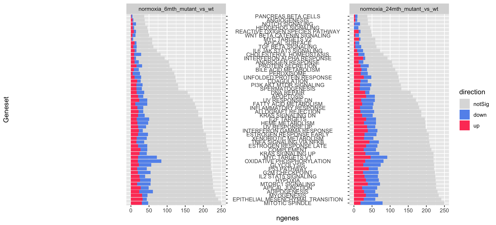

Last updated: 2020-04-22
Checks: 7 0
Knit directory: ire/
This reproducible R Markdown analysis was created with workflowr (version 1.6.1). The Checks tab describes the reproducibility checks that were applied when the results were created. The Past versions tab lists the development history.
Great! Since the R Markdown file has been committed to the Git repository, you know the exact version of the code that produced these results.
Great job! The global environment was empty. Objects defined in the global environment can affect the analysis in your R Markdown file in unknown ways. For reproduciblity it’s best to always run the code in an empty environment.
The command set.seed(20200420) was run prior to running the code in the R Markdown file. Setting a seed ensures that any results that rely on randomness, e.g. subsampling or permutations, are reproducible.
Great job! Recording the operating system, R version, and package versions is critical for reproducibility.
Nice! There were no cached chunks for this analysis, so you can be confident that you successfully produced the results during this run.
Great job! Using relative paths to the files within your workflowr project makes it easier to run your code on other machines.
Great! You are using Git for version control. Tracking code development and connecting the code version to the results is critical for reproducibility.
The results in this page were generated with repository version 0f8be9f. See the Past versions tab to see a history of the changes made to the R Markdown and HTML files.
Note that you need to be careful to ensure that all relevant files for the analysis have been committed to Git prior to generating the results (you can use wflow_publish or wflow_git_commit). workflowr only checks the R Markdown file, but you know if there are other scripts or data files that it depends on. Below is the status of the Git repository when the results were generated:
Ignored files:
Ignored: .DS_Store
Ignored: .RData
Ignored: .Rhistory
Ignored: .Trash/
Ignored: .continuum/
Ignored: .gnupg_pre_2.1/
Ignored: .matplotlib/
Ignored: .t_coffee/
Ignored: Documents/.DS_Store
Ignored: Documents/GitHub/.DS_Store
Ignored: Documents/GitHub/praiseme/praiseme/.Rhistory
Ignored: Documents/GitHub/praiseme/praiseme/.Rproj.user/
Ignored: Documents/NewNotes/notes/
Ignored: Documents/Pictures/
Ignored: Documents/Processing/.DS_Store
Ignored: Documents/Processing/examples/
Ignored: Documents/Processing/libraries/
Ignored: Documents/Processing/spirograph/.DS_Store
Ignored: Documents/Processing/templates/
Ignored: Documents/Processing/tools/
Ignored: Documents/R/
Ignored: Documents/Review-Article.scriv/Settings/User/
Ignored: Documents/ReviewArticlePlanning.scriv/Settings/User/
Ignored: Documents/Tutorial.scriv/Settings/User/
Ignored: Documents/Untitled.scriv/Settings/User/
Ignored: Documents/test.scriv/Settings/User/
Ignored: backup/
Ignored: dircreate/
Untracked files:
Untracked: .AnnotationHub/
Untracked: .CFUserTextEncoding
Untracked: .CHRONOS/
Untracked: .ENA.sh.swp
Untracked: .MacOSX/
Untracked: .RDataTmp
Untracked: .Rapp.history
Untracked: .Xauthority
Untracked: .adobe/
Untracked: .bash_history
Untracked: .bash_profile
Untracked: .bash_profile-anaconda.bak
Untracked: .bash_profile-miniconda3.bak
Untracked: .bash_sessions/
Untracked: .bashrc
Untracked: .bitmonero/
Untracked: .cache/
Untracked: .conda/
Untracked: .condarc
Untracked: .config/
Untracked: .cpanm/
Untracked: .cups/
Untracked: .dlv/
Untracked: .docker/
Untracked: .electrum/
Untracked: .gitconfig
Untracked: .gitflow_export
Untracked: .gitignore
Untracked: .gitignore_global
Untracked: .gnupg/
Untracked: .hgignore_global
Untracked: .keras/
Untracked: .node-gyp/
Untracked: .npm/
Untracked: .nx/
Untracked: .oh-my-zsh/
Untracked: .oracle_jre_usage/
Untracked: .qt/
Untracked: .rnd
Untracked: .rstudio-desktop/
Untracked: .s1.sh
Untracked: .savant/
Untracked: .serverauth.1056
Untracked: .serverauth.1208
Untracked: .serverauth.16273
Untracked: .serverauth.1656
Untracked: .serverauth.18995
Untracked: .serverauth.20301
Untracked: .serverauth.35255
Untracked: .serverauth.38277
Untracked: .serverauth.40350
Untracked: .serverauth.4262
Untracked: .serverauth.4315
Untracked: .serverauth.4358
Untracked: .serverauth.57832
Untracked: .serverauth.63886
Untracked: .serverauth.79286
Untracked: .serverauth.81376
Untracked: .serverauth.920
Untracked: .ssh/
Untracked: .stCommitMsg
Untracked: .subversion/
Untracked: .sudo_as_admin_successful
Untracked: .vim/
Untracked: .viminfo
Untracked: .vscode/
Untracked: .yjp/
Untracked: .zcompdump-ELIZA-5.2
Untracked: .zcompdump-ELIZA-5.3
Untracked: .zsh-update
Untracked: .zsh_history
Untracked: .zshrc
Untracked: 0.361366553072916.tmp
Untracked: 0.547629240007279.tmp
Untracked: 0.561695152931986.tmp
Untracked: 0.738235249024914.tmp
Untracked: 496128434
Untracked: Applications/
Untracked: BSgenome.Drerio.UCSC.danRer11/
Untracked: Boostnote/
Untracked: Box Sync/
Untracked: Box/
Untracked: CytoscapeConfiguration/
Untracked: Desktop/
Untracked: Documents/.localized
Untracked: Documents/GitHub/ire/
Untracked: Documents/GitHub/notes/
Untracked: Documents/GitHub/praiseme/praiseme/R/praiseme.R
Untracked: Documents/GitHub/praiseme/praiseme/man/praiseme.Rd
Untracked: Downloads/
Untracked: Drosophila_melanogaster.BDGP6.ncrna.fa
Untracked: FKBP5-24mths.png
Untracked: FKBP5-6mths.png
Untracked: FKBP5-Oldfish-Mutants.png
Untracked: FKBP5-Oldfish_Wt.png
Untracked: Google Drive/
Untracked: Library/
Untracked: Monero/
Untracked: Movies/
Untracked: Music/
Untracked: PSEN1-Oldfish-Mutants.png
Untracked: PSEN1-Oldfish-Wt.png
Untracked: Pictures/
Untracked: Public/
Untracked: R-3.4.1.pkg
Untracked: Research/
Untracked: RightFont/
Untracked: Sashimi-24mth.png
Untracked: Sashimi-6mth.png
Untracked: Sashimi.png
Untracked: Sashimi2.png
Untracked: Sashimi3.png
Untracked: TableS13-ZScores.xlsx
Untracked: Untitled.csv
Untracked: Untitled.pdf
Untracked: Zebrafish_RNAseq_DE/
Untracked: _book/
Untracked: _bookdown.yml
Untracked: _bookdown_files/
Untracked: anaconda/
Untracked: bib/
Untracked: bin/
Untracked: body.Rmd
Untracked: bookdownplus.Rproj
Untracked: cpp/
Untracked: downloadUrl.gff
Untracked: example/
Untracked: gekko/
Untracked: gitRepos/
Untracked: go/
Untracked: graph.pdf
Untracked: gridsearch.zip
Untracked: gridsearch/
Untracked: homer/
Untracked: hub
Untracked: igv/
Untracked: images/
Untracked: index.Rmd
Untracked: miniconda3/
Untracked: ngsReports_Fastqc.html
Untracked: nhi.dbj
Untracked: nhi/
Untracked: nhisci/
Untracked: old_Box/
Untracked: old_Box_2/
Untracked: pathwayDGE.rds
Untracked: permutedStats-actualModules.RData
Untracked: pkg/
Untracked: programs/
Untracked: ran.csv
Untracked: rmd/
Untracked: runPipeline.sh
Untracked: sav.R
Untracked: script2.sh
Untracked: settings.env
Untracked: src/
Untracked: steve.R
Untracked: style/
Untracked: testData/
Untracked: tex/
Untracked: untitled.R
Untracked: zebrafish.png
Untracked: zshrc
Unstaged changes:
Modified: Documents/GitHub/Zebrafish_RNAseq_DE
Modified: Documents/GitHub/forgetfulfish
Modified: Documents/GitHub/k97fsZebrafishAnalysis
Modified: Documents/GitHub/praiseme/praiseme/DESCRIPTION
Modified: Documents/GitHub/praiseme/praiseme/NAMESPACE
Deleted: Documents/GitHub/praiseme/praiseme/R/hello.R
Deleted: Documents/GitHub/praiseme/praiseme/man/hello.Rd
Modified: Documents/GitHub/praiseme/praiseme/praiseme.Rproj
Modified: Documents/GitHub/q96k97
Deleted: README.md
Deleted: transcriptQuantification.Rmd
Staged changes:
New: Documents/.NH-ConferencePoster.pdf.icloud
New: Documents/2017-09-29.txt
New: Documents/COMBINE_Poster.gif
New: Documents/Discussion.md
New: Documents/EndNote/Styles/Harvard_UofA__Style_Manual_Australia_6th_edn__Surname_only_Jan14 Copy Copy.ens
New: Documents/GitHub/2019_Lardelli_AllWT_6month_RNASeq
New: Documents/GitHub/Zebrafish_RNAseq_DE
New: Documents/GitHub/forgetfulfish
New: Documents/GitHub/futura/FuturaPTBold.otf
New: Documents/GitHub/futura/FuturaPTBoldOblique.otf
New: Documents/GitHub/futura/FuturaPTBook.otf
New: Documents/GitHub/futura/FuturaPTBookOblique.otf
New: Documents/GitHub/futura/FuturaPTCondBold.otf
New: Documents/GitHub/futura/FuturaPTCondBoldOblique.otf
New: Documents/GitHub/futura/FuturaPTCondBook.otf
New: Documents/GitHub/futura/FuturaPTCondBookOblique.otf
New: Documents/GitHub/futura/FuturaPTCondExtraBold.otf
New: Documents/GitHub/futura/FuturaPTCondExtraBoldOblique.otf
New: Documents/GitHub/futura/FuturaPTCondMedium.otf
New: Documents/GitHub/futura/FuturaPTCondMediumOblique.otf
New: Documents/GitHub/futura/FuturaPTDemi.otf
New: Documents/GitHub/futura/FuturaPTDemiOblique.otf
New: Documents/GitHub/futura/FuturaPTExtraBold.otf
New: Documents/GitHub/futura/FuturaPTExtraBoldOblique.otf
New: Documents/GitHub/futura/FuturaPTHeavy.otf
New: Documents/GitHub/futura/FuturaPTHeavyOblique.otf
New: Documents/GitHub/futura/FuturaPTLight.otf
New: Documents/GitHub/futura/FuturaPTLightOblique.otf
New: Documents/GitHub/futura/FuturaPTMedium.otf
New: Documents/GitHub/futura/FuturaPTMediumOblique.otf
New: Documents/GitHub/k97fsZebrafishAnalysis
New: Documents/GitHub/praiseme/praiseme/.Rbuildignore
New: Documents/GitHub/praiseme/praiseme/DESCRIPTION
New: Documents/GitHub/praiseme/praiseme/NAMESPACE
New: Documents/GitHub/praiseme/praiseme/R/hello.R
New: Documents/GitHub/praiseme/praiseme/man/hello.Rd
New: Documents/GitHub/praiseme/praiseme/praiseme.Rproj
New: Documents/GitHub/q96k97
New: Documents/K97 L-plastin immuno figure V2/Slide1.tiff
New: Documents/K97 L-plastin immuno figure V2/Slide2.tiff
New: Documents/K97 L-plastin immuno figure V2/Slide3.tiff
New: Documents/Library/Groups-ulgroup/33c2cbaf58a24f08b01854f32bb164d2-ulgroup/319a43e708bc40209eb9cd2be2db9d5a-ulgroup/09719fe9a8ba4760996aa02aeaeece8a.ulysses/Content.xml
New: Documents/Library/Groups-ulgroup/33c2cbaf58a24f08b01854f32bb164d2-ulgroup/319a43e708bc40209eb9cd2be2db9d5a-ulgroup/09719fe9a8ba4760996aa02aeaeece8a.ulysses/Text.txt
New: Documents/Library/Groups-ulgroup/33c2cbaf58a24f08b01854f32bb164d2-ulgroup/319a43e708bc40209eb9cd2be2db9d5a-ulgroup/8857a9885273430a8be471fb4a977c0f.ulysses/Content.xml
New: Documents/Library/Groups-ulgroup/33c2cbaf58a24f08b01854f32bb164d2-ulgroup/319a43e708bc40209eb9cd2be2db9d5a-ulgroup/8857a9885273430a8be471fb4a977c0f.ulysses/Text.txt
New: Documents/Library/Groups-ulgroup/33c2cbaf58a24f08b01854f32bb164d2-ulgroup/319a43e708bc40209eb9cd2be2db9d5a-ulgroup/Info.ulgroup
New: Documents/Library/Groups-ulgroup/33c2cbaf58a24f08b01854f32bb164d2-ulgroup/319a43e708bc40209eb9cd2be2db9d5a-ulgroup/de8d51154b59494d8b0a4ab28abbac51.ulysses/Content.xml
New: Documents/Library/Groups-ulgroup/33c2cbaf58a24f08b01854f32bb164d2-ulgroup/319a43e708bc40209eb9cd2be2db9d5a-ulgroup/de8d51154b59494d8b0a4ab28abbac51.ulysses/Text.txt
New: Documents/Library/Groups-ulgroup/33c2cbaf58a24f08b01854f32bb164d2-ulgroup/319a43e708bc40209eb9cd2be2db9d5a-ulgroup/efa8615f86f64b8283492b269a4fc746.ulysses/Content.xml
New: Documents/Library/Groups-ulgroup/33c2cbaf58a24f08b01854f32bb164d2-ulgroup/319a43e708bc40209eb9cd2be2db9d5a-ulgroup/efa8615f86f64b8283492b269a4fc746.ulysses/Text.txt
New: Documents/Library/Groups-ulgroup/33c2cbaf58a24f08b01854f32bb164d2-ulgroup/7e4edaf29ca04951ae21507848cca99a-ulgroup/5e09bb30aa7042449b630dae2faab727.ulysses/Content.xml
New: Documents/Library/Groups-ulgroup/33c2cbaf58a24f08b01854f32bb164d2-ulgroup/7e4edaf29ca04951ae21507848cca99a-ulgroup/5e09bb30aa7042449b630dae2faab727.ulysses/Text.txt
New: Documents/Library/Groups-ulgroup/33c2cbaf58a24f08b01854f32bb164d2-ulgroup/7e4edaf29ca04951ae21507848cca99a-ulgroup/6270e917773b4409b44ffc30a0c0d4f9.ulysses/Content.xml
New: Documents/Library/Groups-ulgroup/33c2cbaf58a24f08b01854f32bb164d2-ulgroup/7e4edaf29ca04951ae21507848cca99a-ulgroup/6270e917773b4409b44ffc30a0c0d4f9.ulysses/Text.txt
New: Documents/Library/Groups-ulgroup/33c2cbaf58a24f08b01854f32bb164d2-ulgroup/7e4edaf29ca04951ae21507848cca99a-ulgroup/Info.ulgroup
New: Documents/Library/Groups-ulgroup/33c2cbaf58a24f08b01854f32bb164d2-ulgroup/7e4edaf29ca04951ae21507848cca99a-ulgroup/f05b99ea57a4428e855e008465057e3f.ulysses/Content.xml
New: Documents/Library/Groups-ulgroup/33c2cbaf58a24f08b01854f32bb164d2-ulgroup/7e4edaf29ca04951ae21507848cca99a-ulgroup/f05b99ea57a4428e855e008465057e3f.ulysses/Text.txt
New: Documents/Library/Groups-ulgroup/33c2cbaf58a24f08b01854f32bb164d2-ulgroup/Info.ulgroup
New: Documents/Library/Groups-ulgroup/33c2cbaf58a24f08b01854f32bb164d2-ulgroup/fda38c03c74744e7b00f2237daaaf4a6-ulgroup/5c21d9eb2cd443c4a1aafabc325c13b5.ulysses/Content.xml
New: Documents/Library/Groups-ulgroup/33c2cbaf58a24f08b01854f32bb164d2-ulgroup/fda38c03c74744e7b00f2237daaaf4a6-ulgroup/5c21d9eb2cd443c4a1aafabc325c13b5.ulysses/Media/0.iCloud On My Mac.4fd7a37dc72544aa8ad6ad2579652a02.jpg
New: Documents/Library/Groups-ulgroup/33c2cbaf58a24f08b01854f32bb164d2-ulgroup/fda38c03c74744e7b00f2237daaaf4a6-ulgroup/5c21d9eb2cd443c4a1aafabc325c13b5.ulysses/Text.txt
New: Documents/Library/Groups-ulgroup/33c2cbaf58a24f08b01854f32bb164d2-ulgroup/fda38c03c74744e7b00f2237daaaf4a6-ulgroup/5e53401c53af4596acb2e038c79e3eab.ulysses/Content.xml
New: Documents/Library/Groups-ulgroup/33c2cbaf58a24f08b01854f32bb164d2-ulgroup/fda38c03c74744e7b00f2237daaaf4a6-ulgroup/5e53401c53af4596acb2e038c79e3eab.ulysses/Text.txt
New: Documents/Library/Groups-ulgroup/33c2cbaf58a24f08b01854f32bb164d2-ulgroup/fda38c03c74744e7b00f2237daaaf4a6-ulgroup/Info.ulgroup
New: Documents/Library/Groups-ulgroup/33c2cbaf58a24f08b01854f32bb164d2-ulgroup/fda38c03c74744e7b00f2237daaaf4a6-ulgroup/b292d4b17521411d9626b0cb1797fe85.ulysses/Content.xml
New: Documents/Library/Groups-ulgroup/33c2cbaf58a24f08b01854f32bb164d2-ulgroup/fda38c03c74744e7b00f2237daaaf4a6-ulgroup/b292d4b17521411d9626b0cb1797fe85.ulysses/Text.txt
New: Documents/Library/Groups-ulgroup/Info.ulgroup
New: Documents/Library/Info.ulgroup
New: Documents/Library/Root.plist
New: Documents/Library/Trash-ultrash/Info.ultrash
New: Documents/Library/Unfiled-ulgroup/532af22959ba4fc092f08ee0499b060a.ulysses/Content.xml
New: Documents/Library/Unfiled-ulgroup/532af22959ba4fc092f08ee0499b060a.ulysses/Text.txt
New: Documents/Library/Unfiled-ulgroup/Info.ulgroup
New: Documents/Library/Unfiled-ulgroup/b2d4e1a5449e4aab8431ed1aaaf8e6e3.ulysses/Content.xml
New: Documents/Library/Unfiled-ulgroup/b2d4e1a5449e4aab8431ed1aaaf8e6e3.ulysses/Text.txt
New: Documents/Minimal Wardrobe.md
New: Documents/My EndNote Library - NG.txt
New: Documents/My EndNote Library 3.rtf
New: Documents/My EndNote Library-Dupl.Data/rdb/csort.MYD
New: Documents/My EndNote Library-Dupl.Data/rdb/csort.MYI
New: Documents/My EndNote Library-Dupl.Data/rdb/csort.frm
New: Documents/My EndNote Library-Dupl.Data/rdb/db.opt
New: Documents/My EndNote Library-Dupl.Data/rdb/jterms.MYD
New: Documents/My EndNote Library-Dupl.Data/rdb/jterms.MYI
New: Documents/My EndNote Library-Dupl.Data/rdb/jterms.frm
New: Documents/My EndNote Library-Dupl.Data/rdb/misc.MYD
New: Documents/My EndNote Library-Dupl.Data/rdb/misc.MYI
New: Documents/My EndNote Library-Dupl.Data/rdb/misc.frm
New: Documents/My EndNote Library-Dupl.Data/rdb/pdf_index.MYD
New: Documents/My EndNote Library-Dupl.Data/rdb/pdf_index.MYI
New: Documents/My EndNote Library-Dupl.Data/rdb/pdf_index.frm
New: Documents/My EndNote Library-Dupl.Data/rdb/refs.MYD
New: Documents/My EndNote Library-Dupl.Data/rdb/refs.MYI
New: Documents/My EndNote Library-Dupl.Data/rdb/refs.frm
New: Documents/My EndNote Library-Dupl.Data/rdb/refs_ext.MYD
New: Documents/My EndNote Library-Dupl.Data/rdb/refs_ext.MYI
New: Documents/My EndNote Library-Dupl.Data/rdb/refs_ext.frm
New: Documents/My EndNote Library-Dupl.Data/rdb/terms.MYD
New: Documents/My EndNote Library-Dupl.Data/rdb/terms.MYI
New: Documents/My EndNote Library-Dupl.Data/rdb/terms.frm
New: Documents/My EndNote Library-Dupl.Data/tdb/csort.MYD
New: Documents/My EndNote Library-Dupl.Data/tdb/csort.MYI
New: Documents/My EndNote Library-Dupl.Data/tdb/csort.frm
New: Documents/My EndNote Library-Dupl.Data/tdb/db.opt
New: Documents/My EndNote Library-Dupl.Data/tdb/jterms.MYD
New: Documents/My EndNote Library-Dupl.Data/tdb/jterms.MYI
New: Documents/My EndNote Library-Dupl.Data/tdb/jterms.frm
New: Documents/My EndNote Library-Dupl.Data/tdb/misc.MYD
New: Documents/My EndNote Library-Dupl.Data/tdb/misc.MYI
New: Documents/My EndNote Library-Dupl.Data/tdb/misc.frm
New: Documents/My EndNote Library-Dupl.Data/tdb/pdf_index.MYD
New: Documents/My EndNote Library-Dupl.Data/tdb/pdf_index.MYI
New: Documents/My EndNote Library-Dupl.Data/tdb/pdf_index.frm
New: Documents/My EndNote Library-Dupl.Data/tdb/refs.MYD
New: Documents/My EndNote Library-Dupl.Data/tdb/refs.MYI
New: Documents/My EndNote Library-Dupl.Data/tdb/refs.frm
New: Documents/My EndNote Library-Dupl.Data/tdb/refs_ext.MYD
New: Documents/My EndNote Library-Dupl.Data/tdb/refs_ext.MYI
New: Documents/My EndNote Library-Dupl.Data/tdb/refs_ext.frm
New: Documents/My EndNote Library-Dupl.Data/tdb/terms.MYD
New: Documents/My EndNote Library-Dupl.Data/tdb/terms.MYI
New: Documents/My EndNote Library-Dupl.Data/tdb/terms.frm
New: Documents/My EndNote Library-Dupl.enl
New: Documents/My EndNote Library-Dupl.txt
New: Documents/My EndNote Library.Data/rdb/csort.MYD
New: Documents/My EndNote Library.Data/rdb/csort.MYI
New: Documents/My EndNote Library.Data/rdb/csort.frm
New: Documents/My EndNote Library.Data/rdb/db.opt
New: Documents/My EndNote Library.Data/rdb/jterms.MYD
New: Documents/My EndNote Library.Data/rdb/jterms.MYI
New: Documents/My EndNote Library.Data/rdb/jterms.frm
New: Documents/My EndNote Library.Data/rdb/misc.MYD
New: Documents/My EndNote Library.Data/rdb/misc.MYI
New: Documents/My EndNote Library.Data/rdb/misc.frm
New: Documents/My EndNote Library.Data/rdb/pdf_index.MYD
New: Documents/My EndNote Library.Data/rdb/pdf_index.MYI
New: Documents/My EndNote Library.Data/rdb/pdf_index.frm
New: Documents/My EndNote Library.Data/rdb/refs.MYD
New: Documents/My EndNote Library.Data/rdb/refs.MYI
New: Documents/My EndNote Library.Data/rdb/refs.frm
New: Documents/My EndNote Library.Data/rdb/refs_ext.MYD
New: Documents/My EndNote Library.Data/rdb/refs_ext.MYI
New: Documents/My EndNote Library.Data/rdb/refs_ext.frm
New: Documents/My EndNote Library.Data/rdb/terms.MYD
New: Documents/My EndNote Library.Data/rdb/terms.MYI
New: Documents/My EndNote Library.Data/rdb/terms.frm
New: Documents/My EndNote Library.Data/tdb/csort.MYD
New: Documents/My EndNote Library.Data/tdb/csort.MYI
New: Documents/My EndNote Library.Data/tdb/csort.frm
New: Documents/My EndNote Library.Data/tdb/db.opt
New: Documents/My EndNote Library.Data/tdb/jterms.MYD
New: Documents/My EndNote Library.Data/tdb/jterms.MYI
New: Documents/My EndNote Library.Data/tdb/jterms.frm
New: Documents/My EndNote Library.Data/tdb/misc.MYD
New: Documents/My EndNote Library.Data/tdb/misc.MYI
New: Documents/My EndNote Library.Data/tdb/misc.frm
New: Documents/My EndNote Library.Data/tdb/pdf_index.MYD
New: Documents/My EndNote Library.Data/tdb/pdf_index.MYI
New: Documents/My EndNote Library.Data/tdb/pdf_index.frm
New: Documents/My EndNote Library.Data/tdb/refs.MYD
New: Documents/My EndNote Library.Data/tdb/refs.MYI
New: Documents/My EndNote Library.Data/tdb/refs.frm
New: Documents/My EndNote Library.Data/tdb/refs_ext.MYD
New: Documents/My EndNote Library.Data/tdb/refs_ext.MYI
New: Documents/My EndNote Library.Data/tdb/refs_ext.frm
New: Documents/My EndNote Library.Data/tdb/terms.MYD
New: Documents/My EndNote Library.Data/tdb/terms.MYI
New: Documents/My EndNote Library.Data/tdb/terms.frm
New: Documents/My EndNote Library.enl
New: Documents/My EndNote Library.htm
New: Documents/NG.rtf
New: Documents/NewNotes/boostnote.json
New: Documents/Pages from sankeyDiagram.pdf
New: Documents/Processing/books/books.pde
New: Documents/Processing/books/hi.pde
New: Documents/Processing/books2/books2.pde
New: Documents/Processing/learning/learning.pde
New: Documents/Processing/modes/PythonMode/LICENSE.txt
New: Documents/Processing/modes/PythonMode/application/macosx/Info.plist.tmpl
New: Documents/Processing/modes/PythonMode/application/macosx/dialogs.applescript
New: Documents/Processing/modes/PythonMode/application/macosx/findjava
New: Documents/Processing/modes/PythonMode/application/macosx/sketch.icns
New: Documents/Processing/modes/PythonMode/application/windows/sketch.ico
New: Documents/Processing/modes/PythonMode/examples/Advanced/KeyCodes/KeyCodes.pyde
New: Documents/Processing/modes/PythonMode/examples/Advanced/KeyCodes/sketch.properties
New: Documents/Processing/modes/PythonMode/examples/Basics/Camera/MoveEye/MoveEye.pyde
New: Documents/Processing/modes/PythonMode/examples/Basics/Camera/Orthographic/Orthographic.pyde
New: Documents/Processing/modes/PythonMode/examples/Basics/Camera/Perspective/Perspective.pyde
New: Documents/Processing/modes/PythonMode/examples/Basics/Color/Brightness/Brightness.pyde
New: Documents/Processing/modes/PythonMode/examples/Basics/Color/ColorVariables/ColorVariables.pyde
New: Documents/Processing/modes/PythonMode/examples/Basics/Color/Hue/Hue.pyde
New: Documents/Processing/modes/PythonMode/examples/Basics/Color/LinearGradient/LinearGradient.pyde
New: Documents/Processing/modes/PythonMode/examples/Basics/Color/RadialGradient/RadialGradient.pyde
New: Documents/Processing/modes/PythonMode/examples/Basics/Color/Relativity/Relativity.pyde
New: Documents/Processing/modes/PythonMode/examples/Basics/Color/Saturation/Saturation.pyde
New: Documents/Processing/modes/PythonMode/examples/Basics/Color/WaveGradient/WaveGradient.pyde
New: Documents/Processing/modes/PythonMode/examples/Basics/Control/BooleanOperators/BooleanOperators.pyde
New: Documents/Processing/modes/PythonMode/examples/Basics/Control/Conditionals1/Conditionals1.pyde
New: Documents/Processing/modes/PythonMode/examples/Basics/Control/Conditionals2/Conditionals2.pyde
New: Documents/Processing/modes/PythonMode/examples/Basics/Control/EmbeddedIteration/EmbeddedIteration.pyde
New: Documents/Processing/modes/PythonMode/examples/Basics/Control/Iteration/Iteration.pyde
New: Documents/Processing/modes/PythonMode/examples/Basics/Data/DatatypeConversion/DatatypeConversion.pyde
New: Documents/Processing/modes/PythonMode/examples/Basics/Data/DatatypeConversion/data/Georgia.ttf
New: Documents/Processing/modes/PythonMode/examples/Basics/Data/IntegersFloats/IntegersFloats.pyde
New: Documents/Processing/modes/PythonMode/examples/Basics/Data/Strings/Strings.pyde
New: Documents/Processing/modes/PythonMode/examples/Basics/Data/Strings/data/Georgia.ttf
New: Documents/Processing/modes/PythonMode/examples/Basics/Data/TrueFalse/TrueFalse.pyde
New: Documents/Processing/modes/PythonMode/examples/Basics/Data/VariableScope/VariableScope.pyde
New: Documents/Processing/modes/PythonMode/examples/Basics/Data/Variables/Variables.pyde
New: Documents/Processing/modes/PythonMode/examples/Basics/Form/Bezier/Bezier.pyde
New: Documents/Processing/modes/PythonMode/examples/Basics/Form/PieChart/PieChart.pyde
New: Documents/Processing/modes/PythonMode/examples/Basics/Form/PointsLines/PointsLines.pyde
New: Documents/Processing/modes/PythonMode/examples/Basics/Form/Primitives3D/Primitives3D.pyde
New: Documents/Processing/modes/PythonMode/examples/Basics/Form/RegularPolygon/RegularPolygon.pyde
New: Documents/Processing/modes/PythonMode/examples/Basics/Form/ShapePrimitives/ShapePrimitives.pyde
New: Documents/Processing/modes/PythonMode/examples/Basics/Form/Star/Star.pyde
New: Documents/Processing/modes/PythonMode/examples/Basics/Form/TriangleStrip/TriangleStrip.pyde
New: Documents/Processing/modes/PythonMode/examples/Basics/Image/Alphamask/Alphamask.pyde
New: Documents/Processing/modes/PythonMode/examples/Basics/Image/Alphamask/data/mask.jpg
New: Documents/Processing/modes/PythonMode/examples/Basics/Image/Alphamask/data/moonwalk.jpg
New: Documents/Processing/modes/PythonMode/examples/Basics/Image/BackgroundImage/BackgroundImage.pyde
New: Documents/Processing/modes/PythonMode/examples/Basics/Image/BackgroundImage/data/moonwalk.jpg
New: Documents/Processing/modes/PythonMode/examples/Basics/Image/CreateImage/CreateImage.pyde
New: Documents/Processing/modes/PythonMode/examples/Basics/Image/LoadDisplayImage/LoadDisplayImage.pyde
New: Documents/Processing/modes/PythonMode/examples/Basics/Image/LoadDisplayImage/data/moonwalk.jpg
New: Documents/Processing/modes/PythonMode/examples/Basics/Image/Pointillism/Pointillism.pyde
New: Documents/Processing/modes/PythonMode/examples/Basics/Image/Pointillism/data/moonwalk.jpg
New: Documents/Processing/modes/PythonMode/examples/Basics/Image/RequestImage/RequestImage.pyde
New: Documents/Processing/modes/PythonMode/examples/Basics/Image/RequestImage/data/PT_anim0000.gif
New: Documents/Processing/modes/PythonMode/examples/Basics/Image/RequestImage/data/PT_anim0001.gif
New: Documents/Processing/modes/PythonMode/examples/Basics/Image/RequestImage/data/PT_anim0002.gif
New: Documents/Processing/modes/PythonMode/examples/Basics/Image/RequestImage/data/PT_anim0003.gif
New: Documents/Processing/modes/PythonMode/examples/Basics/Image/RequestImage/data/PT_anim0004.gif
New: Documents/Processing/modes/PythonMode/examples/Basics/Image/RequestImage/data/PT_anim0005.gif
New: Documents/Processing/modes/PythonMode/examples/Basics/Image/RequestImage/data/PT_anim0006.gif
New: Documents/Processing/modes/PythonMode/examples/Basics/Image/RequestImage/data/PT_anim0007.gif
New: Documents/Processing/modes/PythonMode/examples/Basics/Image/RequestImage/data/PT_anim0008.gif
New: Documents/Processing/modes/PythonMode/examples/Basics/Image/RequestImage/data/PT_anim0009.gif
New: Documents/Processing/modes/PythonMode/examples/Basics/Image/RequestImage/data/PT_anim0010.gif
New: Documents/Processing/modes/PythonMode/examples/Basics/Image/RequestImage/data/PT_anim0011.gif
New: Documents/Processing/modes/PythonMode/examples/Basics/Image/Transparency/Transparency.pyde
New: Documents/Processing/modes/PythonMode/examples/Basics/Image/Transparency/data/moonwalk.jpg
New: Documents/Processing/modes/PythonMode/examples/Basics/Input/Clock/Clock.pyde
New: Documents/Processing/modes/PythonMode/examples/Basics/Input/Constrain/Constrain.pyde
New: Documents/Processing/modes/PythonMode/examples/Basics/Input/Easing/Easing.pyde
New: Documents/Processing/modes/PythonMode/examples/Basics/Input/Keyboard/Keyboard.pyde
New: Documents/Processing/modes/PythonMode/examples/Basics/Input/KeyboardFunctions/KeyboardFunctions.pyde
New: Documents/Processing/modes/PythonMode/examples/Basics/Input/Milliseconds/Milliseconds.pyde
New: Documents/Processing/modes/PythonMode/examples/Basics/Input/Mouse1D/Mouse1D.pyde
New: Documents/Processing/modes/PythonMode/examples/Basics/Input/Mouse2D/Mouse2D.pyde
New: Documents/Processing/modes/PythonMode/examples/Basics/Input/MouseFunctions/MouseFunctions.pyde
New: Documents/Processing/modes/PythonMode/examples/Basics/Input/MousePress/MousePress.pyde
New: Documents/Processing/modes/PythonMode/examples/Basics/Input/MouseSignals/MouseSignals.pyde
New: Documents/Processing/modes/PythonMode/examples/Basics/Input/StoringInput/StoringInput.pyde
New: Documents/Processing/modes/PythonMode/examples/Basics/Lights/Directional/Directional.pyde
New: Documents/Processing/modes/PythonMode/examples/Basics/Lights/Mixture/Mixture.pyde
New: Documents/Processing/modes/PythonMode/examples/Basics/Lights/MixtureGrid/MixtureGrid.pyde
New: Documents/Processing/modes/PythonMode/examples/Basics/Lights/OnOff/OnOff.pyde
New: Documents/Processing/modes/PythonMode/examples/Basics/Lights/Reflection/Reflection.pyde
New: Documents/Processing/modes/PythonMode/examples/Basics/Lights/Spot/Spot.pyde
New: Documents/Processing/modes/PythonMode/examples/Basics/Lists/List/List.pyde
New: Documents/Processing/modes/PythonMode/examples/Basics/Lists/List2D/List2D.pyde
New: Documents/Processing/modes/PythonMode/examples/Basics/Lists/ListObjects/ListObjects.pyde
New: Documents/Processing/modes/PythonMode/examples/Basics/Lists/ListObjects/module.py
New: Documents/Processing/modes/PythonMode/examples/Basics/Math/AdditiveWave/AdditiveWave.pyde
New: Documents/Processing/modes/PythonMode/examples/Basics/Math/Arctangent/Arctangent.pyde
New: Documents/Processing/modes/PythonMode/examples/Basics/Math/Arctangent/eye.py
New: Documents/Processing/modes/PythonMode/examples/Basics/Math/Distance1D/Distance1D.pyde
New: Documents/Processing/modes/PythonMode/examples/Basics/Math/Distance2D/Distance2D.pyde
New: Documents/Processing/modes/PythonMode/examples/Basics/Math/DoubleRandom/DoubleRandom.pyde
New: Documents/Processing/modes/PythonMode/examples/Basics/Math/Graphing2DEquation/Graphing2DEquation.pyde
New: Documents/Processing/modes/PythonMode/examples/Basics/Math/IncrementDecrement/IncrementDecrement.pyde
New: Documents/Processing/modes/PythonMode/examples/Basics/Math/Interpolate/Interpolate.pyde
New: Documents/Processing/modes/PythonMode/examples/Basics/Math/Map/Map.pyde
New: Documents/Processing/modes/PythonMode/examples/Basics/Math/Noise1D/Noise1D.pyde
New: Documents/Processing/modes/PythonMode/examples/Basics/Math/Noise2D/Noise2D.pyde
New: Documents/Processing/modes/PythonMode/examples/Basics/Math/Noise3D/Noise3D.pyde
New: Documents/Processing/modes/PythonMode/examples/Basics/Math/NoiseWave/NoiseWave.pyde
New: Documents/Processing/modes/PythonMode/examples/Basics/Math/OperatorPrecedence/OperatorPrecedence.pyde
New: Documents/Processing/modes/PythonMode/examples/Basics/Math/PolarToCartesian/PolarToCartesian.pyde
New: Documents/Processing/modes/PythonMode/examples/Basics/Math/Random/Random.pyde
New: Documents/Processing/modes/PythonMode/examples/Basics/Math/RandomGaussian/RandomGaussian.pyde
New: Documents/Processing/modes/PythonMode/examples/Basics/Math/Sine/Sine.pyde
New: Documents/Processing/modes/PythonMode/examples/Basics/Math/SineCosine/SineCosine.pyde
New: Documents/Processing/modes/PythonMode/examples/Basics/Math/SineWave/SineWave.pyde
New: Documents/Processing/modes/PythonMode/examples/Basics/Objects/CompositeObjects/CompositeObjects.pyde
New: Documents/Processing/modes/PythonMode/examples/Basics/Objects/CompositeObjects/egg.py
New: Documents/Processing/modes/PythonMode/examples/Basics/Objects/CompositeObjects/egg_ring.py
New: Documents/Processing/modes/PythonMode/examples/Basics/Objects/CompositeObjects/ring.py
New: Documents/Processing/modes/PythonMode/examples/Basics/Objects/Inheritance/Inheritance.pyde
New: Documents/Processing/modes/PythonMode/examples/Basics/Objects/MultipleConstructors/MultipleConstructors.pyde
New: Documents/Processing/modes/PythonMode/examples/Basics/Objects/Objects/Objects.pyde
New: Documents/Processing/modes/PythonMode/examples/Basics/Shape/DisableStyle/DisableStyle.pyde
New: Documents/Processing/modes/PythonMode/examples/Basics/Shape/DisableStyle/data/bot1.svg
New: Documents/Processing/modes/PythonMode/examples/Basics/Shape/GetChild/GetChild.pyde
New: Documents/Processing/modes/PythonMode/examples/Basics/Shape/GetChild/data/usa-wikipedia.svg
New: Documents/Processing/modes/PythonMode/examples/Basics/Shape/LoadDisplayOBJ/LoadDisplayOBJ.pyde
New: Documents/Processing/modes/PythonMode/examples/Basics/Shape/LoadDisplayOBJ/data/rocket.mtl
New: Documents/Processing/modes/PythonMode/examples/Basics/Shape/LoadDisplayOBJ/data/rocket.obj
New: Documents/Processing/modes/PythonMode/examples/Basics/Shape/LoadDisplayOBJ/data/rocket.png
New: Documents/Processing/modes/PythonMode/examples/Basics/Shape/LoadDisplaySVG/LoadDisplaySVG.pyde
New: Documents/Processing/modes/PythonMode/examples/Basics/Shape/LoadDisplaySVG/data/bot1.svg
New: Documents/Processing/modes/PythonMode/examples/Basics/Shape/ScaleShape/ScaleShape.pyde
New: Documents/Processing/modes/PythonMode/examples/Basics/Shape/ScaleShape/data/bot1.svg
New: Documents/Processing/modes/PythonMode/examples/Basics/Structure/Coordinates/Coordinates.pyde
New: Documents/Processing/modes/PythonMode/examples/Basics/Structure/CreateGraphics/CreateGraphics.pyde
New: Documents/Processing/modes/PythonMode/examples/Basics/Structure/CreateGraphics/data/mask.jpg
New: Documents/Processing/modes/PythonMode/examples/Basics/Structure/CreateGraphics/data/test.jpg
New: Documents/Processing/modes/PythonMode/examples/Basics/Structure/Functions/Functions.pyde
New: Documents/Processing/modes/PythonMode/examples/Basics/Structure/Loop/Loop.pyde
New: Documents/Processing/modes/PythonMode/examples/Basics/Structure/NoLoop/NoLoop.pyde
New: Documents/Processing/modes/PythonMode/examples/Basics/Structure/Recursion/Recursion.pyde
New: Documents/Processing/modes/PythonMode/examples/Basics/Structure/Redraw/Redraw.pyde
New: Documents/Processing/modes/PythonMode/examples/Basics/Structure/SetupDraw/SetupDraw.pyde
New: Documents/Processing/modes/PythonMode/examples/Basics/Structure/StatementsComments/StatementsComments.pyde
New: Documents/Processing/modes/PythonMode/examples/Basics/Structure/WidthHeight/WidthHeight.pyde
New: Documents/Processing/modes/PythonMode/examples/Basics/Transform/Arm/Arm.pyde
New: Documents/Processing/modes/PythonMode/examples/Basics/Transform/Rotate/Rotate.pyde
New: Documents/Processing/modes/PythonMode/examples/Basics/Transform/RotatePushPop/RotatePushPop.pyde
New: Documents/Processing/modes/PythonMode/examples/Basics/Transform/RotateXY/RotateXY.pyde
New: Documents/Processing/modes/PythonMode/examples/Basics/Transform/Scale/Scale.pyde
New: Documents/Processing/modes/PythonMode/examples/Basics/Transform/Translate/Translate.pyde
New: Documents/Processing/modes/PythonMode/examples/Basics/Typography/FiveWaysOfWritingText/FiveWaysOfWritingText.pyde
New: Documents/Processing/modes/PythonMode/examples/Basics/Typography/FiveWaysOfWritingText/sketch.properties
New: Documents/Processing/modes/PythonMode/examples/Basics/Typography/Letters/Letters.pyde
New: Documents/Processing/modes/PythonMode/examples/Basics/Typography/Letters/data/Georgia.ttf
New: Documents/Processing/modes/PythonMode/examples/Basics/Typography/Words/Words.pyde
New: Documents/Processing/modes/PythonMode/examples/Basics/Typography/Words/data/Georgia.ttf
New: Documents/Processing/modes/PythonMode/examples/Basics/Web/EmbeddedLinks/EmbeddedLinks.pyde
New: Documents/Processing/modes/PythonMode/examples/Basics/Web/LoadingImages/LoadingImages.pyde
New: Documents/Processing/modes/PythonMode/examples/Contributed Libraries in Python/ControlP5/Textfield/Textfield.pyde
New: Documents/Processing/modes/PythonMode/examples/Contributed Libraries in Python/Fisica/ContactListener/ContactListener.pyde
New: Documents/Processing/modes/PythonMode/examples/Contributed Libraries in Python/MSAFluid/MSAFluid.pyde
New: Documents/Processing/modes/PythonMode/examples/Contributed Libraries in Python/MSAFluid/particle.py
New: Documents/Processing/modes/PythonMode/examples/Contributed Libraries in Python/MSAFluid/particle_system.py
New: Documents/Processing/modes/PythonMode/examples/Contributed Libraries in Python/OpenCV/BackgroundSubtraction/BackgroundSubtraction.pyde
New: Documents/Processing/modes/PythonMode/examples/Contributed Libraries in Python/OpenCV/BackgroundSubtraction/data/.street.mov.icloud
New: Documents/Processing/modes/PythonMode/examples/Contributed Libraries in Python/OpenCV/BrightestPoint/BrightestPoint.pyde
New: Documents/Processing/modes/PythonMode/examples/Contributed Libraries in Python/OpenCV/BrightestPoint/robot_light.jpg
New: Documents/Processing/modes/PythonMode/examples/Contributed Libraries in Python/OpenCV/BrightnessContrast/BrightnessContrast.pyde
New: Documents/Processing/modes/PythonMode/examples/Contributed Libraries in Python/OpenCV/BrightnessContrast/test.jpg
New: Documents/Processing/modes/PythonMode/examples/Contributed Libraries in Python/OpenCV/CalibrationDemo/CalibrationDemo.pyde
New: Documents/Processing/modes/PythonMode/examples/Contributed Libraries in Python/OpenCV/CalibrationDemo/data/checkerboard.jpg
New: Documents/Processing/modes/PythonMode/examples/Contributed Libraries in Python/OpenCV/ColorChannels/.green_object.png.icloud
New: Documents/Processing/modes/PythonMode/examples/Contributed Libraries in Python/OpenCV/ColorChannels/ColorChannels.pyde
New: Documents/Processing/modes/PythonMode/examples/Contributed Libraries in Python/OpenCV/DepthFromStereo/DepthFromStereo.pyde
New: Documents/Processing/modes/PythonMode/examples/Contributed Libraries in Python/OpenCV/DepthFromStereo/scene_l.jpg
New: Documents/Processing/modes/PythonMode/examples/Contributed Libraries in Python/OpenCV/DepthFromStereo/scene_r.jpg
New: Documents/Processing/modes/PythonMode/examples/Contributed Libraries in Python/OpenCV/DilationAndErosion/DilationAndErosion.pyde
New: Documents/Processing/modes/PythonMode/examples/Contributed Libraries in Python/OpenCV/DilationAndErosion/line_drawing.jpg
New: Documents/Processing/modes/PythonMode/examples/Contributed Libraries in Python/OpenCV/DilationAndErosion/pen_sketch.jpg
New: Documents/Processing/modes/PythonMode/examples/Contributed Libraries in Python/OpenCV/FaceDetection/FaceDetection.pyde
New: Documents/Processing/modes/PythonMode/examples/Contributed Libraries in Python/OpenCV/FaceDetection/data/test.jpg
New: Documents/Processing/modes/PythonMode/examples/Contributed Libraries in Python/OpenCV/FaceDetection/data/test.png
New: Documents/Processing/modes/PythonMode/examples/Contributed Libraries in Python/OpenCV/FaceDetection/data/testImage.png
New: Documents/Processing/modes/PythonMode/examples/Contributed Libraries in Python/OpenCV/FaceDetection/data/transparent_test.png
New: Documents/Processing/modes/PythonMode/examples/Contributed Libraries in Python/OpenCV/FilterImages/FilterImages.pyde
New: Documents/Processing/modes/PythonMode/examples/Contributed Libraries in Python/OpenCV/FilterImages/test.jpg
New: Documents/Processing/modes/PythonMode/examples/Contributed Libraries in Python/OpenCV/FindContours/FindContours.pyde
New: Documents/Processing/modes/PythonMode/examples/Contributed Libraries in Python/OpenCV/FindContours/test.jpg
New: Documents/Processing/modes/PythonMode/examples/Contributed Libraries in Python/OpenCV/FindEdges/FindEdges.pyde
New: Documents/Processing/modes/PythonMode/examples/Contributed Libraries in Python/OpenCV/FindEdges/test.jpg
New: Documents/Processing/modes/PythonMode/examples/Contributed Libraries in Python/OpenCV/FindHistogram/FindHistogram.pyde
New: Documents/Processing/modes/PythonMode/examples/Contributed Libraries in Python/OpenCV/FindHistogram/test.jpg
New: Documents/Processing/modes/PythonMode/examples/Contributed Libraries in Python/OpenCV/HistogramSkinDetection/HistogramSkinDetection.pyde
New: Documents/Processing/modes/PythonMode/examples/Contributed Libraries in Python/OpenCV/HistogramSkinDetection/data/cb-cr.png
New: Documents/Processing/modes/PythonMode/examples/Contributed Libraries in Python/OpenCV/HistogramSkinDetection/data/test.jpg
New: Documents/Processing/modes/PythonMode/examples/Contributed Libraries in Python/OpenCV/LiveCamTest/LiveCamTest.pyde
New: Documents/Processing/modes/PythonMode/examples/Contributed Libraries in Python/OpenCV/LiveCamTest/data/haarcascade_frontalface_alt.xml
New: Documents/Processing/modes/PythonMode/examples/Contributed Libraries in Python/beads/Lesson01_AudioContext/Lesson01_AudioContext.pyde
New: Documents/Processing/modes/PythonMode/examples/Contributed Libraries in Python/beads/Lesson04_SamplePlayer/Lesson04_SamplePlayer.pyde
New: Documents/Processing/modes/PythonMode/examples/Contributed Libraries in Python/ttslib/ttstest/ttstest.pyde
New: Documents/Processing/modes/PythonMode/examples/Demos/Graphics/BoxClock/BoxClock.pyde
New: Documents/Processing/modes/PythonMode/examples/Demos/Graphics/LowLevelGL/LowLevelGL.pyde
New: Documents/Processing/modes/PythonMode/examples/Demos/Graphics/LowLevelGL/data/frag.glsl
New: Documents/Processing/modes/PythonMode/examples/Demos/Graphics/LowLevelGL/data/vert.glsl
New: Documents/Processing/modes/PythonMode/examples/Demos/Graphics/Particles/Particles.pyde
New: Documents/Processing/modes/PythonMode/examples/Demos/Graphics/Particles/data/sprite.png
New: Documents/Processing/modes/PythonMode/examples/Demos/Graphics/Particles/particle.py
New: Documents/Processing/modes/PythonMode/examples/Demos/Graphics/Particles/particle_system.py
New: Documents/Processing/modes/PythonMode/examples/Demos/Graphics/Tentacles/Tentacles.pyde
New: Documents/Processing/modes/PythonMode/examples/Demos/Graphics/Tentacles/segment.py
New: Documents/Processing/modes/PythonMode/examples/Demos/Graphics/Tentacles/tentacle.py
New: Documents/Processing/modes/PythonMode/examples/Demos/Graphics/Yellowtail/Yellowtail.pyde
New: Documents/Processing/modes/PythonMode/examples/Demos/Graphics/Yellowtail/gesture.py
New: Documents/Processing/modes/PythonMode/examples/Demos/Graphics/Yellowtail/vec3f.py
New: Documents/Processing/modes/PythonMode/examples/Python Mode Differences/IntAndFloat/IntAndFloat.pyde
New: Documents/Processing/modes/PythonMode/examples/Python Mode Differences/IntAndFloat/sketch.properties
New: Documents/Processing/modes/PythonMode/examples/Python Mode Differences/LiteralColors/LiteralColors.pyde
New: Documents/Processing/modes/PythonMode/examples/Python Mode Differences/LiteralColors/sketch.properties
New: Documents/Processing/modes/PythonMode/examples/Python Mode Differences/WithStatements/WithStatements.pyde
New: Documents/Processing/modes/PythonMode/examples/Python Mode Differences/WithStatements/sketch.properties
New: Documents/Processing/modes/PythonMode/examples/Topics/Animation/AnimatedSprite/AnimatedSprite.pyde
New: Documents/Processing/modes/PythonMode/examples/Topics/Animation/AnimatedSprite/animation.py
New: Documents/Processing/modes/PythonMode/examples/Topics/Animation/AnimatedSprite/data/PT_Shifty_0000.gif
New: Documents/Processing/modes/PythonMode/examples/Topics/Animation/AnimatedSprite/data/PT_Shifty_0001.gif
New: Documents/Processing/modes/PythonMode/examples/Topics/Animation/AnimatedSprite/data/PT_Shifty_0002.gif
New: Documents/Processing/modes/PythonMode/examples/Topics/Animation/AnimatedSprite/data/PT_Shifty_0003.gif
New: Documents/Processing/modes/PythonMode/examples/Topics/Animation/AnimatedSprite/data/PT_Shifty_0004.gif
New: Documents/Processing/modes/PythonMode/examples/Topics/Animation/AnimatedSprite/data/PT_Shifty_0005.gif
New: Documents/Processing/modes/PythonMode/examples/Topics/Animation/AnimatedSprite/data/PT_Shifty_0006.gif
New: Documents/Processing/modes/PythonMode/examples/Topics/Animation/AnimatedSprite/data/PT_Shifty_0007.gif
New: Documents/Processing/modes/PythonMode/examples/Topics/Animation/AnimatedSprite/data/PT_Shifty_0008.gif
New: Documents/Processing/modes/PythonMode/examples/Topics/Animation/AnimatedSprite/data/PT_Shifty_0009.gif
New: Documents/Processing/modes/PythonMode/examples/Topics/Animation/AnimatedSprite/data/PT_Shifty_0010.gif
New: Documents/Processing/modes/PythonMode/examples/Topics/Animation/AnimatedSprite/data/PT_Shifty_0011.gif
New: Documents/Processing/modes/PythonMode/examples/Topics/Animation/AnimatedSprite/data/PT_Shifty_0012.gif
New: Documents/Processing/modes/PythonMode/examples/Topics/Animation/AnimatedSprite/data/PT_Shifty_0013.gif
New: Documents/Processing/modes/PythonMode/examples/Topics/Animation/AnimatedSprite/data/PT_Shifty_0014.gif
New: Documents/Processing/modes/PythonMode/examples/Topics/Animation/AnimatedSprite/data/PT_Shifty_0015.gif
New: Documents/Processing/modes/PythonMode/examples/Topics/Animation/AnimatedSprite/data/PT_Shifty_0016.gif
New: Documents/Processing/modes/PythonMode/examples/Topics/Animation/AnimatedSprite/data/PT_Shifty_0017.gif
New: Documents/Processing/modes/PythonMode/examples/Topics/Animation/AnimatedSprite/data/PT_Shifty_0018.gif
New: Documents/Processing/modes/PythonMode/examples/Topics/Animation/AnimatedSprite/data/PT_Shifty_0019.gif
New: Documents/Processing/modes/PythonMode/examples/Topics/Animation/AnimatedSprite/data/PT_Shifty_0020.gif
New: Documents/Processing/modes/PythonMode/examples/Topics/Animation/AnimatedSprite/data/PT_Shifty_0021.gif
New: Documents/Processing/modes/PythonMode/examples/Topics/Animation/AnimatedSprite/data/PT_Shifty_0022.gif
New: Documents/Processing/modes/PythonMode/examples/Topics/Animation/AnimatedSprite/data/PT_Shifty_0023.gif
New: Documents/Processing/modes/PythonMode/examples/Topics/Animation/AnimatedSprite/data/PT_Shifty_0024.gif
New: Documents/Processing/modes/PythonMode/examples/Topics/Animation/AnimatedSprite/data/PT_Shifty_0025.gif
New: Documents/Processing/modes/PythonMode/examples/Topics/Animation/AnimatedSprite/data/PT_Shifty_0026.gif
New: Documents/Processing/modes/PythonMode/examples/Topics/Animation/AnimatedSprite/data/PT_Shifty_0027.gif
New: Documents/Processing/modes/PythonMode/examples/Topics/Animation/AnimatedSprite/data/PT_Shifty_0028.gif
New: Documents/Processing/modes/PythonMode/examples/Topics/Animation/AnimatedSprite/data/PT_Shifty_0029.gif
New: Documents/Processing/modes/PythonMode/examples/Topics/Animation/AnimatedSprite/data/PT_Shifty_0030.gif
New: Documents/Processing/modes/PythonMode/examples/Topics/Animation/AnimatedSprite/data/PT_Shifty_0031.gif
New: Documents/Processing/modes/PythonMode/examples/Topics/Animation/AnimatedSprite/data/PT_Shifty_0032.gif
New: Documents/Processing/modes/PythonMode/examples/Topics/Animation/AnimatedSprite/data/PT_Shifty_0033.gif
New: Documents/Processing/modes/PythonMode/examples/Topics/Animation/AnimatedSprite/data/PT_Shifty_0034.gif
New: Documents/Processing/modes/PythonMode/examples/Topics/Animation/AnimatedSprite/data/PT_Shifty_0035.gif
New: Documents/Processing/modes/PythonMode/examples/Topics/Animation/AnimatedSprite/data/PT_Shifty_0036.gif
New: Documents/Processing/modes/PythonMode/examples/Topics/Animation/AnimatedSprite/data/PT_Shifty_0037.gif
New: Documents/Processing/modes/PythonMode/examples/Topics/Animation/AnimatedSprite/data/PT_Teddy_0000.gif
New: Documents/Processing/modes/PythonMode/examples/Topics/Animation/AnimatedSprite/data/PT_Teddy_0001.gif
New: Documents/Processing/modes/PythonMode/examples/Topics/Animation/AnimatedSprite/data/PT_Teddy_0002.gif
New: Documents/Processing/modes/PythonMode/examples/Topics/Animation/AnimatedSprite/data/PT_Teddy_0003.gif
New: Documents/Processing/modes/PythonMode/examples/Topics/Animation/AnimatedSprite/data/PT_Teddy_0004.gif
New: Documents/Processing/modes/PythonMode/examples/Topics/Animation/AnimatedSprite/data/PT_Teddy_0005.gif
New: Documents/Processing/modes/PythonMode/examples/Topics/Animation/AnimatedSprite/data/PT_Teddy_0006.gif
New: Documents/Processing/modes/PythonMode/examples/Topics/Animation/AnimatedSprite/data/PT_Teddy_0007.gif
New: Documents/Processing/modes/PythonMode/examples/Topics/Animation/AnimatedSprite/data/PT_Teddy_0008.gif
New: Documents/Processing/modes/PythonMode/examples/Topics/Animation/AnimatedSprite/data/PT_Teddy_0009.gif
New: Documents/Processing/modes/PythonMode/examples/Topics/Animation/AnimatedSprite/data/PT_Teddy_0010.gif
New: Documents/Processing/modes/PythonMode/examples/Topics/Animation/AnimatedSprite/data/PT_Teddy_0011.gif
New: Documents/Processing/modes/PythonMode/examples/Topics/Animation/AnimatedSprite/data/PT_Teddy_0012.gif
New: Documents/Processing/modes/PythonMode/examples/Topics/Animation/AnimatedSprite/data/PT_Teddy_0013.gif
New: Documents/Processing/modes/PythonMode/examples/Topics/Animation/AnimatedSprite/data/PT_Teddy_0014.gif
New: Documents/Processing/modes/PythonMode/examples/Topics/Animation/AnimatedSprite/data/PT_Teddy_0015.gif
New: Documents/Processing/modes/PythonMode/examples/Topics/Animation/AnimatedSprite/data/PT_Teddy_0016.gif
New: Documents/Processing/modes/PythonMode/examples/Topics/Animation/AnimatedSprite/data/PT_Teddy_0017.gif
New: Documents/Processing/modes/PythonMode/examples/Topics/Animation/AnimatedSprite/data/PT_Teddy_0018.gif
New: Documents/Processing/modes/PythonMode/examples/Topics/Animation/AnimatedSprite/data/PT_Teddy_0019.gif
New: Documents/Processing/modes/PythonMode/examples/Topics/Animation/AnimatedSprite/data/PT_Teddy_0020.gif
New: Documents/Processing/modes/PythonMode/examples/Topics/Animation/AnimatedSprite/data/PT_Teddy_0021.gif
New: Documents/Processing/modes/PythonMode/examples/Topics/Animation/AnimatedSprite/data/PT_Teddy_0022.gif
New: Documents/Processing/modes/PythonMode/examples/Topics/Animation/AnimatedSprite/data/PT_Teddy_0023.gif
New: Documents/Processing/modes/PythonMode/examples/Topics/Animation/AnimatedSprite/data/PT_Teddy_0024.gif
New: Documents/Processing/modes/PythonMode/examples/Topics/Animation/AnimatedSprite/data/PT_Teddy_0025.gif
New: Documents/Processing/modes/PythonMode/examples/Topics/Animation/AnimatedSprite/data/PT_Teddy_0026.gif
New: Documents/Processing/modes/PythonMode/examples/Topics/Animation/AnimatedSprite/data/PT_Teddy_0027.gif
New: Documents/Processing/modes/PythonMode/examples/Topics/Animation/AnimatedSprite/data/PT_Teddy_0028.gif
New: Documents/Processing/modes/PythonMode/examples/Topics/Animation/AnimatedSprite/data/PT_Teddy_0029.gif
New: Documents/Processing/modes/PythonMode/examples/Topics/Animation/AnimatedSprite/data/PT_Teddy_0030.gif
New: Documents/Processing/modes/PythonMode/examples/Topics/Animation/AnimatedSprite/data/PT_Teddy_0031.gif
New: Documents/Processing/modes/PythonMode/examples/Topics/Animation/AnimatedSprite/data/PT_Teddy_0032.gif
New: Documents/Processing/modes/PythonMode/examples/Topics/Animation/AnimatedSprite/data/PT_Teddy_0033.gif
New: Documents/Processing/modes/PythonMode/examples/Topics/Animation/AnimatedSprite/data/PT_Teddy_0034.gif
New: Documents/Processing/modes/PythonMode/examples/Topics/Animation/AnimatedSprite/data/PT_Teddy_0035.gif
New: Documents/Processing/modes/PythonMode/examples/Topics/Animation/AnimatedSprite/data/PT_Teddy_0036.gif
New: Documents/Processing/modes/PythonMode/examples/Topics/Animation/AnimatedSprite/data/PT_Teddy_0037.gif
New: Documents/Processing/modes/PythonMode/examples/Topics/Animation/AnimatedSprite/data/PT_Teddy_0038.gif
New: Documents/Processing/modes/PythonMode/examples/Topics/Animation/AnimatedSprite/data/PT_Teddy_0039.gif
New: Documents/Processing/modes/PythonMode/examples/Topics/Animation/AnimatedSprite/data/PT_Teddy_0040.gif
New: Documents/Processing/modes/PythonMode/examples/Topics/Animation/AnimatedSprite/data/PT_Teddy_0041.gif
New: Documents/Processing/modes/PythonMode/examples/Topics/Animation/AnimatedSprite/data/PT_Teddy_0042.gif
New: Documents/Processing/modes/PythonMode/examples/Topics/Animation/AnimatedSprite/data/PT_Teddy_0043.gif
New: Documents/Processing/modes/PythonMode/examples/Topics/Animation/AnimatedSprite/data/PT_Teddy_0044.gif
New: Documents/Processing/modes/PythonMode/examples/Topics/Animation/AnimatedSprite/data/PT_Teddy_0045.gif
New: Documents/Processing/modes/PythonMode/examples/Topics/Animation/AnimatedSprite/data/PT_Teddy_0046.gif
New: Documents/Processing/modes/PythonMode/examples/Topics/Animation/AnimatedSprite/data/PT_Teddy_0047.gif
New: Documents/Processing/modes/PythonMode/examples/Topics/Animation/AnimatedSprite/data/PT_Teddy_0048.gif
New: Documents/Processing/modes/PythonMode/examples/Topics/Animation/AnimatedSprite/data/PT_Teddy_0049.gif
New: Documents/Processing/modes/PythonMode/examples/Topics/Animation/AnimatedSprite/data/PT_Teddy_0050.gif
New: Documents/Processing/modes/PythonMode/examples/Topics/Animation/AnimatedSprite/data/PT_Teddy_0051.gif
New: Documents/Processing/modes/PythonMode/examples/Topics/Animation/AnimatedSprite/data/PT_Teddy_0052.gif
New: Documents/Processing/modes/PythonMode/examples/Topics/Animation/AnimatedSprite/data/PT_Teddy_0053.gif
New: Documents/Processing/modes/PythonMode/examples/Topics/Animation/AnimatedSprite/data/PT_Teddy_0054.gif
New: Documents/Processing/modes/PythonMode/examples/Topics/Animation/AnimatedSprite/data/PT_Teddy_0055.gif
New: Documents/Processing/modes/PythonMode/examples/Topics/Animation/AnimatedSprite/data/PT_Teddy_0056.gif
New: Documents/Processing/modes/PythonMode/examples/Topics/Animation/AnimatedSprite/data/PT_Teddy_0057.gif
New: Documents/Processing/modes/PythonMode/examples/Topics/Animation/AnimatedSprite/data/PT_Teddy_0058.gif
New: Documents/Processing/modes/PythonMode/examples/Topics/Animation/AnimatedSprite/data/PT_Teddy_0059.gif
New: Documents/Processing/modes/PythonMode/examples/Topics/Animation/Sequential/Sequential.pyde
New: Documents/Processing/modes/PythonMode/examples/Topics/Animation/Sequential/data/PT_anim0000.gif
New: Documents/Processing/modes/PythonMode/examples/Topics/Animation/Sequential/data/PT_anim0001.gif
New: Documents/Processing/modes/PythonMode/examples/Topics/Animation/Sequential/data/PT_anim0002.gif
New: Documents/Processing/modes/PythonMode/examples/Topics/Animation/Sequential/data/PT_anim0003.gif
New: Documents/Processing/modes/PythonMode/examples/Topics/Animation/Sequential/data/PT_anim0004.gif
New: Documents/Processing/modes/PythonMode/examples/Topics/Animation/Sequential/data/PT_anim0005.gif
New: Documents/Processing/modes/PythonMode/examples/Topics/Animation/Sequential/data/PT_anim0006.gif
New: Documents/Processing/modes/PythonMode/examples/Topics/Animation/Sequential/data/PT_anim0007.gif
New: Documents/Processing/modes/PythonMode/examples/Topics/Animation/Sequential/data/PT_anim0008.gif
New: Documents/Processing/modes/PythonMode/examples/Topics/Animation/Sequential/data/PT_anim0009.gif
New: Documents/Processing/modes/PythonMode/examples/Topics/Animation/Sequential/data/PT_anim0010.gif
New: Documents/Processing/modes/PythonMode/examples/Topics/Animation/Sequential/data/PT_anim0011.gif
New: Documents/Processing/modes/PythonMode/examples/Topics/ContinuousLines/ContinuousLines.pyde
New: Documents/Processing/modes/PythonMode/examples/Topics/Create Shapes/BeginEndContour/BeginEndContour.pyde
New: Documents/Processing/modes/PythonMode/examples/Topics/Create Shapes/GroupPShape/GroupPShape.pyde
New: Documents/Processing/modes/PythonMode/examples/Topics/Create Shapes/ParticleSystemPShape/ParticleSystemPShape.pyde
New: Documents/Processing/modes/PythonMode/examples/Topics/Create Shapes/ParticleSystemPShape/data/sprite.png
New: Documents/Processing/modes/PythonMode/examples/Topics/Create Shapes/ParticleSystemPShape/particle.py
New: Documents/Processing/modes/PythonMode/examples/Topics/Create Shapes/ParticleSystemPShape/particle_system.py
New: Documents/Processing/modes/PythonMode/examples/Topics/Create Shapes/PathPShape/PathPShape.pyde
New: Documents/Processing/modes/PythonMode/examples/Topics/Create Shapes/PolygonPShape/PolygonPShape.pyde
New: Documents/Processing/modes/PythonMode/examples/Topics/Create Shapes/PolygonPShapeOOP/PolygonPShapeOOP.pyde
New: Documents/Processing/modes/PythonMode/examples/Topics/Create Shapes/PolygonPShapeOOP/star.py
New: Documents/Processing/modes/PythonMode/examples/Topics/Create Shapes/PolygonPShapeOOP2/PolygonPShapeOOP2.pyde
New: Documents/Processing/modes/PythonMode/examples/Topics/Create Shapes/PolygonPShapeOOP2/polygon.py
New: Documents/Processing/modes/PythonMode/examples/Topics/Create Shapes/PolygonPShapeOOP3/PolygonPShapeOOP3.pyde
New: Documents/Processing/modes/PythonMode/examples/Topics/Create Shapes/PolygonPShapeOOP3/polygon.py
New: Documents/Processing/modes/PythonMode/examples/Topics/Create Shapes/PrimitivePShape/PrimitivePShape.pyde
New: Documents/Processing/modes/PythonMode/examples/Topics/Create Shapes/WigglePShape/WigglePShape.pyde
New: Documents/Processing/modes/PythonMode/examples/Topics/Create Shapes/WigglePShape/wiggler.py
New: Documents/Processing/modes/PythonMode/examples/Topics/Fractals and L-Systems/Koch/Koch.pyde
New: Documents/Processing/modes/PythonMode/examples/Topics/Fractals and L-Systems/Koch/koch_fractal.py
New: Documents/Processing/modes/PythonMode/examples/Topics/Fractals and L-Systems/Koch/koch_line.py
New: Documents/Processing/modes/PythonMode/examples/Topics/Fractals and L-Systems/Mandelbrot/Mandelbrot.pyde
New: Documents/Processing/modes/PythonMode/examples/Topics/Fractals and L-Systems/PenroseSnowflake/PenroseSnowflake.pyde
New: Documents/Processing/modes/PythonMode/examples/Topics/Fractals and L-Systems/PenroseSnowflake/l_system.py
New: Documents/Processing/modes/PythonMode/examples/Topics/Fractals and L-Systems/PenroseSnowflake/penrose_snowflake_l_system.py
New: Documents/Processing/modes/PythonMode/examples/Topics/Fractals and L-Systems/PenroseTile/PenroseTile.pyde
New: Documents/Processing/modes/PythonMode/examples/Topics/Fractals and L-Systems/PenroseTile/l_system.py
New: Documents/Processing/modes/PythonMode/examples/Topics/Fractals and L-Systems/PenroseTile/penrose_l_system.py
New: Documents/Processing/modes/PythonMode/examples/Topics/Fractals and L-Systems/Pentigree/Pentigree.pyde
New: Documents/Processing/modes/PythonMode/examples/Topics/Fractals and L-Systems/Pentigree/l_system.py
New: Documents/Processing/modes/PythonMode/examples/Topics/Fractals and L-Systems/Pentigree/pentigree_l_system.py
New: Documents/Processing/modes/PythonMode/examples/Topics/Fractals and L-Systems/Tree/Tree.pyde
New: Documents/Processing/modes/PythonMode/examples/Topics/GUI/Button/Button.pyde
New: Documents/Processing/modes/PythonMode/examples/Topics/GUI/Handles/Handles.pyde
New: Documents/Processing/modes/PythonMode/examples/Topics/GUI/Handles/handle.py
New: Documents/Processing/modes/PythonMode/examples/Topics/GUI/Rollover/Rollover.pyde
New: Documents/Processing/modes/PythonMode/examples/Topics/GUI/Scrollbar/Scrollbar.pyde
New: Documents/Processing/modes/PythonMode/examples/Topics/GUI/Scrollbar/data/seedBottom.jpg
New: Documents/Processing/modes/PythonMode/examples/Topics/GUI/Scrollbar/data/seedTop.jpg
New: Documents/Processing/modes/PythonMode/examples/Topics/GUI/Scrollbar/hscrollbar.py
New: Documents/Processing/modes/PythonMode/examples/Topics/Geometry/Icosahedra/Icosahedra.pyde
New: Documents/Processing/modes/PythonMode/examples/Topics/Geometry/Icosahedra/icosahedron.py
New: Documents/Processing/modes/PythonMode/examples/Topics/Geometry/Icosahedra/shape3d.py
New: Documents/Processing/modes/PythonMode/examples/Topics/Geometry/NoiseSphere/NoiseSphere.pyde
New: Documents/Processing/modes/PythonMode/examples/Topics/Geometry/NoiseSphere/hair.py
New: Documents/Processing/modes/PythonMode/examples/Topics/Geometry/RGBCube/RGBCube.pyde
New: Documents/Processing/modes/PythonMode/examples/Topics/Geometry/ShapeTransform/ShapeTransform.pyde
New: Documents/Processing/modes/PythonMode/examples/Topics/Geometry/SpaceJunk/SpaceJunk.pyde
New: Documents/Processing/modes/PythonMode/examples/Topics/Geometry/SpaceJunk/cube.py
New: Documents/Processing/modes/PythonMode/examples/Topics/Geometry/Toroid/Toroid.pyde
New: Documents/Processing/modes/PythonMode/examples/Topics/Geometry/Vertices/Vertices.pyde
New: Documents/Processing/modes/PythonMode/examples/Topics/Image Processing/Blending/Blending.pyde
New: Documents/Processing/modes/PythonMode/examples/Topics/Image Processing/Blending/data/layer1.jpg
New: Documents/Processing/modes/PythonMode/examples/Topics/Image Processing/Blending/data/layer2.jpg
New: Documents/Processing/modes/PythonMode/examples/Topics/Image Processing/Blur/Blur.pyde
New: Documents/Processing/modes/PythonMode/examples/Topics/Image Processing/Blur/data/moon.jpg
New: Documents/Processing/modes/PythonMode/examples/Topics/Image Processing/Brightness/Brightness.pyde
New: Documents/Processing/modes/PythonMode/examples/Topics/Image Processing/Brightness/data/moon-wide.jpg
New: Documents/Processing/modes/PythonMode/examples/Topics/Image Processing/Convolution/Convolution.pyde
New: Documents/Processing/modes/PythonMode/examples/Topics/Image Processing/Convolution/data/moon-wide.jpg
New: Documents/Processing/modes/PythonMode/examples/Topics/Image Processing/EdgeDetection/EdgeDetection.pyde
New: Documents/Processing/modes/PythonMode/examples/Topics/Image Processing/EdgeDetection/data/moon.jpg
New: Documents/Processing/modes/PythonMode/examples/Topics/Image Processing/Explode/Explode.pyde
New: Documents/Processing/modes/PythonMode/examples/Topics/Image Processing/Explode/data/eames.jpg
New: Documents/Processing/modes/PythonMode/examples/Topics/Image Processing/Extrusion/Extrusion.pyde
New: Documents/Processing/modes/PythonMode/examples/Topics/Image Processing/Extrusion/data/ystone08.jpg
New: Documents/Processing/modes/PythonMode/examples/Topics/Image Processing/Histogram/Histogram.pyde
New: Documents/Processing/modes/PythonMode/examples/Topics/Image Processing/Histogram/data/frontier.jpg
New: Documents/Processing/modes/PythonMode/examples/Topics/Image Processing/LinearImage/LinearImage.pyde
New: Documents/Processing/modes/PythonMode/examples/Topics/Image Processing/LinearImage/data/sea.jpg
New: Documents/Processing/modes/PythonMode/examples/Topics/Image Processing/PixelArray/PixelArray.pyde
New: Documents/Processing/modes/PythonMode/examples/Topics/Image Processing/PixelArray/data/sea.jpg
New: Documents/Processing/modes/PythonMode/examples/Topics/Image Processing/Zoom/Zoom.pyde
New: Documents/Processing/modes/PythonMode/examples/Topics/Image Processing/Zoom/data/ystone08.jpg
New: Documents/Processing/modes/PythonMode/examples/Topics/Interaction/Follow1/Follow1.pyde
New: Documents/Processing/modes/PythonMode/examples/Topics/Interaction/Follow2/Follow2.pyde
New: Documents/Processing/modes/PythonMode/examples/Topics/Interaction/Follow3/Follow3.pyde
New: Documents/Processing/modes/PythonMode/examples/Topics/Interaction/Reach1/Reach1.pyde
New: Documents/Processing/modes/PythonMode/examples/Topics/Interaction/Reach2/Reach2.pyde
New: Documents/Processing/modes/PythonMode/examples/Topics/Interaction/Reach3/Reach3.pyde
New: Documents/Processing/modes/PythonMode/examples/Topics/Interaction/Tickle/Tickle.pyde
New: Documents/Processing/modes/PythonMode/examples/Topics/Interaction/Tickle/data/Georgia.ttf
New: Documents/Processing/modes/PythonMode/examples/Topics/Motion/Bounce/Bounce.pyde
New: Documents/Processing/modes/PythonMode/examples/Topics/Motion/BouncyBubbles/BouncyBubbles.pyde
New: Documents/Processing/modes/PythonMode/examples/Topics/Motion/BouncyBubbles/ball.py
New: Documents/Processing/modes/PythonMode/examples/Topics/Motion/Brownian/Brownian.pyde
New: Documents/Processing/modes/PythonMode/examples/Topics/Motion/CircleCollision/CircleCollision.pyde
New: Documents/Processing/modes/PythonMode/examples/Topics/Motion/CircleCollision/ball.py
New: Documents/Processing/modes/PythonMode/examples/Topics/Motion/CubesWithinCube/CubesWithinCube.pyde
New: Documents/Processing/modes/PythonMode/examples/Topics/Motion/CubesWithinCube/cube.py
New: Documents/Processing/modes/PythonMode/examples/Topics/Motion/Linear/Linear.pyde
New: Documents/Processing/modes/PythonMode/examples/Topics/Motion/Morph/Morph.pyde
New: Documents/Processing/modes/PythonMode/examples/Topics/Motion/MovingOnCurves/MovingOnCurves.pyde
New: Documents/Processing/modes/PythonMode/examples/Topics/Motion/Reflection1/Reflection1.pyde
New: Documents/Processing/modes/PythonMode/examples/Topics/Motion/Reflection2/Reflection2.pyde
New: Documents/Processing/modes/PythonMode/examples/Topics/Motion/Reflection2/ground.py
New: Documents/Processing/modes/PythonMode/examples/Topics/Motion/Reflection2/orb.py
New: Documents/Processing/modes/PythonMode/examples/Topics/Pattern/Pattern.pyde
New: Documents/Processing/modes/PythonMode/examples/Topics/Pulses/Pulses.pyde
New: Documents/Processing/modes/PythonMode/examples/Topics/Shaders/BlurFilter/BlurFilter.pyde
New: Documents/Processing/modes/PythonMode/examples/Topics/Shaders/BlurFilter/data/blur.glsl
New: Documents/Processing/modes/PythonMode/examples/Topics/Shaders/Conway/Conway.pyde
New: Documents/Processing/modes/PythonMode/examples/Topics/Shaders/Conway/data/conway.glsl
New: Documents/Processing/modes/PythonMode/examples/Topics/Shaders/CustomBlend/CustomBlend.pyde
New: Documents/Processing/modes/PythonMode/examples/Topics/Shaders/CustomBlend/data/burn.glsl
New: Documents/Processing/modes/PythonMode/examples/Topics/Shaders/CustomBlend/data/difference.glsl
New: Documents/Processing/modes/PythonMode/examples/Topics/Shaders/CustomBlend/data/dodge.glsl
New: Documents/Processing/modes/PythonMode/examples/Topics/Shaders/CustomBlend/data/leaves.jpg
New: Documents/Processing/modes/PythonMode/examples/Topics/Shaders/CustomBlend/data/moonwalk.jpg
New: Documents/Processing/modes/PythonMode/examples/Topics/Shaders/CustomBlend/data/overlay.glsl
New: Documents/Processing/modes/PythonMode/examples/Topics/Shaders/Deform/Deform.pyde
New: Documents/Processing/modes/PythonMode/examples/Topics/Shaders/Deform/data/deform.glsl
New: Documents/Processing/modes/PythonMode/examples/Topics/Shaders/Deform/data/tex1.jpg
New: Documents/Processing/modes/PythonMode/examples/Topics/Shaders/DomeProjection/DomeProjection.pyde
New: Documents/Processing/modes/PythonMode/examples/Topics/Shaders/DomeProjection/data/cubemapfrag.glsl
New: Documents/Processing/modes/PythonMode/examples/Topics/Shaders/DomeProjection/data/cubemapvert.glsl
New: Documents/Processing/modes/PythonMode/examples/Topics/Shaders/EdgeDetect/EdgeDetect.pyde
New: Documents/Processing/modes/PythonMode/examples/Topics/Shaders/EdgeDetect/data/edges.glsl
New: Documents/Processing/modes/PythonMode/examples/Topics/Shaders/EdgeDetect/data/leaves.jpg
New: Documents/Processing/modes/PythonMode/examples/Topics/Shaders/EdgeFilter/EdgeFilter.pyde
New: Documents/Processing/modes/PythonMode/examples/Topics/Shaders/EdgeFilter/data/edges.glsl
New: Documents/Processing/modes/PythonMode/examples/Topics/Shaders/GlossyFishEye/GlossyFishEye.pyde
New: Documents/Processing/modes/PythonMode/examples/Topics/Shaders/GlossyFishEye/data/FishEye.glsl
New: Documents/Processing/modes/PythonMode/examples/Topics/Shaders/GlossyFishEye/data/GlossyFrag.glsl
New: Documents/Processing/modes/PythonMode/examples/Topics/Shaders/GlossyFishEye/data/GlossyVert.glsl
New: Documents/Processing/modes/PythonMode/examples/Topics/Shaders/ImageMask/ImageMask.pyde
New: Documents/Processing/modes/PythonMode/examples/Topics/Shaders/ImageMask/data/leaves.jpg
New: Documents/Processing/modes/PythonMode/examples/Topics/Shaders/ImageMask/data/mask.glsl
New: Documents/Processing/modes/PythonMode/examples/Topics/Shaders/Landscape/Landscape.pyde
New: Documents/Processing/modes/PythonMode/examples/Topics/Shaders/Landscape/data/landscape.glsl
New: Documents/Processing/modes/PythonMode/examples/Topics/Shaders/Monjori/Monjori.pyde
New: Documents/Processing/modes/PythonMode/examples/Topics/Shaders/Monjori/data/monjori.glsl
New: Documents/Processing/modes/PythonMode/examples/Topics/Shaders/Nebula/Nebula.pyde
New: Documents/Processing/modes/PythonMode/examples/Topics/Shaders/Nebula/data/nebula.glsl
New: Documents/Processing/modes/PythonMode/examples/Topics/Shaders/SepBlur/SepBlur.pyde
New: Documents/Processing/modes/PythonMode/examples/Topics/Shaders/SepBlur/data/blur.glsl
New: Documents/Processing/modes/PythonMode/examples/Topics/Shaders/ToonShading/ToonShading.pyde
New: Documents/Processing/modes/PythonMode/examples/Topics/Shaders/ToonShading/data/ToonFrag.glsl
New: Documents/Processing/modes/PythonMode/examples/Topics/Shaders/ToonShading/data/ToonVert.glsl
New: Documents/Processing/modes/PythonMode/examples/Topics/Simulate/Chain/Chain.pyde
New: Documents/Processing/modes/PythonMode/examples/Topics/Simulate/Flocking/Flocking.pyde
New: Documents/Processing/modes/PythonMode/examples/Topics/Simulate/Flocking/boid.py
New: Documents/Processing/modes/PythonMode/examples/Topics/Simulate/Flocking/flock.py
New: Documents/Processing/modes/PythonMode/examples/Topics/Simulate/ForcesWithVectors/ForcesWithVectors.pyde
New: Documents/Processing/modes/PythonMode/examples/Topics/Simulate/ForcesWithVectors/liquid.py
New: Documents/Processing/modes/PythonMode/examples/Topics/Simulate/ForcesWithVectors/mover.py
New: Documents/Processing/modes/PythonMode/examples/Topics/Simulate/GravitationalAttraction3D/GravitationalAttraction3D.pyde
New: Documents/Processing/modes/PythonMode/examples/Topics/Simulate/GravitationalAttraction3D/planet.py
New: Documents/Processing/modes/PythonMode/examples/Topics/Simulate/GravitationalAttraction3D/sun.py
New: Documents/Processing/modes/PythonMode/examples/Topics/Simulate/MultipleParticleSystems/MultipleParticleSystems.pyde
New: Documents/Processing/modes/PythonMode/examples/Topics/Simulate/MultipleParticleSystems/crazy_particle.py
New: Documents/Processing/modes/PythonMode/examples/Topics/Simulate/MultipleParticleSystems/particle.py
New: Documents/Processing/modes/PythonMode/examples/Topics/Simulate/MultipleParticleSystems/particle_system.py
New: Documents/Processing/modes/PythonMode/examples/Topics/Simulate/SimpleParticleSystem/SimpleParticleSystem.pyde
New: Documents/Processing/modes/PythonMode/examples/Topics/Simulate/SimpleParticleSystem/particle.py
New: Documents/Processing/modes/PythonMode/examples/Topics/Simulate/SimpleParticleSystem/particle_system.py
New: Documents/Processing/modes/PythonMode/examples/Topics/Simulate/SmokeParticleSystem/SmokeParticleSystem.pyde
New: Documents/Processing/modes/PythonMode/examples/Topics/Simulate/SmokeParticleSystem/data/texture.gif
New: Documents/Processing/modes/PythonMode/examples/Topics/Simulate/SmokeParticleSystem/data/texture.png
New: Documents/Processing/modes/PythonMode/examples/Topics/Simulate/SmokeParticleSystem/particle.py
New: Documents/Processing/modes/PythonMode/examples/Topics/Simulate/SmokeParticleSystem/particle_system.py
New: Documents/Processing/modes/PythonMode/examples/Topics/Simulate/SoftBody/SoftBody.pyde
New: Documents/Processing/modes/PythonMode/examples/Topics/Simulate/Spring/Spring.pyde
New: Documents/Processing/modes/PythonMode/examples/Topics/Simulate/Springs/Springs.pyde
New: Documents/Processing/modes/PythonMode/examples/Topics/Textures/TextureCube/TextureCube.pyde
New: Documents/Processing/modes/PythonMode/examples/Topics/Textures/TextureCube/data/berlin-1.jpg
New: Documents/Processing/modes/PythonMode/examples/Topics/Textures/TextureCylinder/TextureCylinder.pyde
New: Documents/Processing/modes/PythonMode/examples/Topics/Textures/TextureCylinder/data/berlin-1.jpg
New: Documents/Processing/modes/PythonMode/examples/Topics/Textures/TextureQuad/TextureQuad.pyde
New: Documents/Processing/modes/PythonMode/examples/Topics/Textures/TextureQuad/data/berlin-1.jpg
New: Documents/Processing/modes/PythonMode/examples/Topics/Textures/TextureSphere/TextureSphere.pyde
New: Documents/Processing/modes/PythonMode/examples/Topics/Textures/TextureSphere/data/world32k.jpg
New: Documents/Processing/modes/PythonMode/examples/Topics/Textures/TextureTriangle/TextureTriangle.pyde
New: Documents/Processing/modes/PythonMode/examples/Topics/Textures/TextureTriangle/data/berlin-1.jpg
New: Documents/Processing/modes/PythonMode/examples/Topics/Vectors/AccelerationWithVectors/AccelerationWithVectors.pyde
New: Documents/Processing/modes/PythonMode/examples/Topics/Vectors/AccelerationWithVectors/mover.py
New: Documents/Processing/modes/PythonMode/examples/Topics/Vectors/BouncingBall/BouncingBall.pyde
New: Documents/Processing/modes/PythonMode/examples/Topics/Vectors/VectorMath/VectorMath.pyde
New: Documents/Processing/modes/PythonMode/formatter/LICENSE.autopep8
New: Documents/Processing/modes/PythonMode/formatter/LICENSE.pep8
New: Documents/Processing/modes/PythonMode/formatter/autopep8.py
New: Documents/Processing/modes/PythonMode/formatter/format_server.py
New: Documents/Processing/modes/PythonMode/formatter/pep8.py
New: Documents/Processing/modes/PythonMode/keywords.txt
New: Documents/Processing/modes/PythonMode/mode.properties
New: Documents/Processing/modes/PythonMode/mode/LICENSE.jython
New: Documents/Processing/modes/PythonMode/mode/PythonMode.jar
New: Documents/Processing/modes/PythonMode/mode/guava-17.0.jar
New: Documents/Processing/modes/PythonMode/mode/jython.jar
New: Documents/Processing/modes/PythonMode/src.zip
New: Documents/Processing/modes/PythonMode/theme/buttons-2x.png
New: Documents/Processing/modes/PythonMode/theme/buttons.png
New: Documents/Processing/modes/PythonMode/theme/mode-2x.png
New: Documents/Processing/modes/PythonMode/theme/mode.png
New: Documents/Processing/modes/PythonMode/theme/splash.png
New: Documents/Processing/pulsar/pulsar.pde
New: Documents/Processing/rotating_circles/rotating_circles.pde
New: Documents/Processing/satellite/satellite.pde
New: Documents/Processing/satellites/satellites.pde
New: Documents/Processing/sketch_170417b/sketch_170417b.pde
New: Documents/Processing/sketch_170417c/sketch_170417c.pde
New: Documents/Processing/sketch_170506a/sketch_170506a.pde
New: Documents/Processing/spirograph/spirograph.pde
New: Documents/ProposalBib.rtf
New: Documents/Results2.html
New: Documents/Review-Article.scriv/Files/Docs/4.pdf
New: Documents/Review-Article.scriv/Files/Docs/4_synopsis.txt
New: Documents/Review-Article.scriv/Files/Docs/docs.checksum
New: Documents/Review-Article.scriv/Files/ProjectNotes/index.xml
New: Documents/Review-Article.scriv/Files/binder.autosave
New: Documents/Review-Article.scriv/Files/binder.backup
New: Documents/Review-Article.scriv/Files/search.indexes
New: Documents/Review-Article.scriv/Files/version.txt
New: Documents/Review-Article.scriv/QuickLook/Preview.html
New: Documents/Review-Article.scriv/QuickLook/Thumbnail.jpg
New: Documents/Review-Article.scriv/Review-Article.scrivx
New: Documents/Review-Article.scriv/Settings/ui.plist
New: Documents/ReviewArticlePlanning.scriv/Files/Docs/11.rtf
New: Documents/ReviewArticlePlanning.scriv/Files/Docs/11_notes.rtf
New: Documents/ReviewArticlePlanning.scriv/Files/Docs/11_synopsis.txt
New: Documents/ReviewArticlePlanning.scriv/Files/Docs/12.rtf
New: Documents/ReviewArticlePlanning.scriv/Files/Docs/29.rtf
New: Documents/ReviewArticlePlanning.scriv/Files/Docs/34.pdf
New: Documents/ReviewArticlePlanning.scriv/Files/Docs/6.rtf
New: Documents/ReviewArticlePlanning.scriv/Files/Docs/6_notes.rtf
New: Documents/ReviewArticlePlanning.scriv/Files/Docs/docs.checksum
New: Documents/ReviewArticlePlanning.scriv/Files/ProjectNotes/index.xml
New: Documents/ReviewArticlePlanning.scriv/Files/binder.autosave
New: Documents/ReviewArticlePlanning.scriv/Files/binder.backup
New: Documents/ReviewArticlePlanning.scriv/Files/search.indexes
New: Documents/ReviewArticlePlanning.scriv/Files/version.txt
New: Documents/ReviewArticlePlanning.scriv/QuickLook/Preview.html
New: Documents/ReviewArticlePlanning.scriv/QuickLook/Thumbnail.jpg
New: Documents/ReviewArticlePlanning.scriv/QuickLook/qlbg.jpg
New: Documents/ReviewArticlePlanning.scriv/ReviewArticlePlanning.scrivx
New: Documents/ReviewArticlePlanning.scriv/Settings/compile.plist
New: Documents/ReviewArticlePlanning.scriv/Settings/template_compile.plist
New: Documents/ReviewArticlePlanning.scriv/Settings/templateinfo.xml
New: Documents/ReviewArticlePlanning.scriv/Settings/ui.plist
New: Documents/September Update 2018.md
New: Documents/The following Research objectives outlined in the Research Proposal have been achieved.rtf
New: Documents/The following Research objectives outlined in the Research Proposal have been achieved/Backup of The following Research objectives outlined in the Research Proposal have been achieved.rtf
New: Documents/Tutorial.scriv/Files/Docs/10_synopsis.txt
New: Documents/Tutorial.scriv/Files/Docs/11.rtf
New: Documents/Tutorial.scriv/Files/Docs/11_synopsis.txt
New: Documents/Tutorial.scriv/Files/Docs/13.links
New: Documents/Tutorial.scriv/Files/Docs/13.rtf
New: Documents/Tutorial.scriv/Files/Docs/13_synopsis.txt
New: Documents/Tutorial.scriv/Files/Docs/14.rtf
New: Documents/Tutorial.scriv/Files/Docs/17.rtf
New: Documents/Tutorial.scriv/Files/Docs/17_synopsis.txt
New: Documents/Tutorial.scriv/Files/Docs/18_synopsis.txt
New: Documents/Tutorial.scriv/Files/Docs/19.rtf
New: Documents/Tutorial.scriv/Files/Docs/20.rtf
New: Documents/Tutorial.scriv/Files/Docs/21.links
New: Documents/Tutorial.scriv/Files/Docs/21.rtf
New: Documents/Tutorial.scriv/Files/Docs/22.rtf
New: Documents/Tutorial.scriv/Files/Docs/24.rtf
New: Documents/Tutorial.scriv/Files/Docs/24_synopsis.txt
New: Documents/Tutorial.scriv/Files/Docs/26.rtf
New: Documents/Tutorial.scriv/Files/Docs/26_synopsis.txt
New: Documents/Tutorial.scriv/Files/Docs/27.rtf
New: Documents/Tutorial.scriv/Files/Docs/28.wav
New: Documents/Tutorial.scriv/Files/Docs/29_synopsis.txt
New: Documents/Tutorial.scriv/Files/Docs/30.rtf
New: Documents/Tutorial.scriv/Files/Docs/31.links
New: Documents/Tutorial.scriv/Files/Docs/31.rtf
New: Documents/Tutorial.scriv/Files/Docs/32.rtf
New: Documents/Tutorial.scriv/Files/Docs/36.rtf
New: Documents/Tutorial.scriv/Files/Docs/37.pdf
New: Documents/Tutorial.scriv/Files/Docs/37_synopsis.txt
New: Documents/Tutorial.scriv/Files/Docs/4.links
New: Documents/Tutorial.scriv/Files/Docs/4.rtf
New: Documents/Tutorial.scriv/Files/Docs/41.rtf
New: Documents/Tutorial.scriv/Files/Docs/42.rtf
New: Documents/Tutorial.scriv/Files/Docs/42_synopsis.txt
New: Documents/Tutorial.scriv/Files/Docs/44.jpg
New: Documents/Tutorial.scriv/Files/Docs/47.rtf
New: Documents/Tutorial.scriv/Files/Docs/47_notes.rtf
New: Documents/Tutorial.scriv/Files/Docs/48_synopsis.txt
New: Documents/Tutorial.scriv/Files/Docs/4_synopsis.txt
New: Documents/Tutorial.scriv/Files/Docs/5.rtf
New: Documents/Tutorial.scriv/Files/Docs/50.rtf
New: Documents/Tutorial.scriv/Files/Docs/51.rtf
New: Documents/Tutorial.scriv/Files/Docs/52.rtf
New: Documents/Tutorial.scriv/Files/Docs/52_notes.rtf
New: Documents/Tutorial.scriv/Files/Docs/53.rtf
New: Documents/Tutorial.scriv/Files/Docs/54.rtf
New: Documents/Tutorial.scriv/Files/Docs/56.links
New: Documents/Tutorial.scriv/Files/Docs/56.rtf
New: Documents/Tutorial.scriv/Files/Docs/57.rtf
New: Documents/Tutorial.scriv/Files/Docs/57_synopsis.txt
New: Documents/Tutorial.scriv/Files/Docs/59.rtf
New: Documents/Tutorial.scriv/Files/Docs/6.rtf
New: Documents/Tutorial.scriv/Files/Docs/60.rtf
New: Documents/Tutorial.scriv/Files/Docs/60_synopsis.txt
New: Documents/Tutorial.scriv/Files/Docs/62.rtf
New: Documents/Tutorial.scriv/Files/Docs/65.rtf
New: Documents/Tutorial.scriv/Files/Docs/66.rtf
New: Documents/Tutorial.scriv/Files/Docs/67.rtf
New: Documents/Tutorial.scriv/Files/Docs/6_synopsis.txt
New: Documents/Tutorial.scriv/Files/Docs/7.rtf
New: Documents/Tutorial.scriv/Files/Docs/7_synopsis.txt
New: Documents/Tutorial.scriv/Files/Docs/8.rtf
New: Documents/Tutorial.scriv/Files/Docs/docs.checksum
New: Documents/Tutorial.scriv/Files/ProjectNotes/index.xml
New: Documents/Tutorial.scriv/Files/binder.autosave
New: Documents/Tutorial.scriv/Files/binder.backup
New: Documents/Tutorial.scriv/Files/search.indexes
New: Documents/Tutorial.scriv/Files/version.txt
New: Documents/Tutorial.scriv/QuickLook/Preview.html
New: Documents/Tutorial.scriv/QuickLook/Thumbnail.jpg
New: Documents/Tutorial.scriv/QuickLook/qlbg.jpg
New: Documents/Tutorial.scriv/Settings/compile.plist
New: Documents/Tutorial.scriv/Settings/ui.plist
New: Documents/Tutorial.scriv/Snapshots/22.snapshots/2006-08-23-19-33-44+0100.rtf
New: Documents/Tutorial.scriv/Snapshots/22.snapshots/index.xml
New: Documents/Tutorial.scriv/Tutorial.scrivx
New: Documents/Untitled 2.txt
New: Documents/Untitled.scriv/Files/Docs/3.rtf
New: Documents/Untitled.scriv/Files/Docs/8.rtf
New: Documents/Untitled.scriv/Files/Docs/9.pdf
New: Documents/Untitled.scriv/Files/Docs/docs.checksum
New: Documents/Untitled.scriv/Files/ProjectNotes/index.xml
New: Documents/Untitled.scriv/Files/binder.autosave
New: Documents/Untitled.scriv/Files/binder.backup
New: Documents/Untitled.scriv/Files/search.indexes
New: Documents/Untitled.scriv/Files/version.txt
New: Documents/Untitled.scriv/QuickLook/Preview.html
New: Documents/Untitled.scriv/QuickLook/Thumbnail.jpg
New: Documents/Untitled.scriv/QuickLook/qlbg.jpg
New: Documents/Untitled.scriv/Settings/compile.plist
New: Documents/Untitled.scriv/Settings/template_compile.plist
New: Documents/Untitled.scriv/Settings/templateinfo.xml
New: Documents/Untitled.scriv/Settings/ui.plist
New: Documents/Untitled.scriv/Untitled.scrivx
New: Documents/amtlib.framework/Resources
New: Documents/amtlib.framework/Versions/A/CodeResources
New: Documents/amtlib.framework/Versions/A/Resources/Info.plist
New: Documents/amtlib.framework/Versions/A/_CodeSignature/CodeResources
New: Documents/amtlib.framework/Versions/A/amtlib
New: Documents/amtlib.framework/Versions/Current
New: Documents/amtlib.framework/amtlib
New: Documents/test.scriv/Files/Docs/10.rtf
New: Documents/test.scriv/Files/Docs/11.rtf
New: Documents/test.scriv/Files/Docs/12.rtf
New: Documents/test.scriv/Files/Docs/13.rtf
New: Documents/test.scriv/Files/Docs/19.rtf
New: Documents/test.scriv/Files/Docs/20.rtf
New: Documents/test.scriv/Files/Docs/27.rtf
New: Documents/test.scriv/Files/Docs/28.rtf
New: Documents/test.scriv/Files/Docs/28_notes.rtf
New: Documents/test.scriv/Files/Docs/29.rtf
New: Documents/test.scriv/Files/Docs/30.rtf
New: Documents/test.scriv/Files/Docs/5.rtf
New: Documents/test.scriv/Files/Docs/6.rtf
New: Documents/test.scriv/Files/Docs/7.rtf
New: Documents/test.scriv/Files/Docs/8.rtf
New: Documents/test.scriv/Files/Docs/docs.checksum
New: Documents/test.scriv/Files/ProjectNotes/index.xml
New: Documents/test.scriv/Files/binder.backup
New: Documents/test.scriv/Files/search.indexes
New: Documents/test.scriv/Files/version.txt
New: Documents/test.scriv/QuickLook/Preview.html
New: Documents/test.scriv/QuickLook/Thumbnail.jpg
New: Documents/test.scriv/QuickLook/qlbg.jpg
New: Documents/test.scriv/Settings/compile.plist
New: Documents/test.scriv/Settings/template_compile.plist
New: Documents/test.scriv/Settings/templateinfo.xml
New: Documents/test.scriv/Settings/ui.plist
New: Documents/test.scriv/test.scrivx
Note that any generated files, e.g. HTML, png, CSS, etc., are not included in this status report because it is ok for generated content to have uncommitted changes.
There are no past versions. Publish this analysis with wflow_publish() to start tracking its development.
In this analysis, we will perform gene set enrichment testing on the fAD-like zebrafish dataset using the following gene sets:
IRE gene sets defined in ire-genes.Rmd
Previously in de-analysis.Rmd, we performed differential gene expression analysis using limma.
To perform gene set enrichment testing, we will use a combined method involving three different gene set enrichment testing methods (fry, camera, and fgsea). See combinedGSEA.R for details on how this is done. The function combinedGSEA.R requires some objects from the limma analysis (contrasts, design, voomData) to be imported.
The gene sets on MSigDB contain human genes. To use these as part of an analysis with zebrafish data, the homologous zebrafish gene IDs first need to be swapped in.
The gene set collections from MSigDB were downloaded from here as .gmt files containing human entrezgene IDs.
Below, we import them in and convert from a list of lists to a data.frame.
genesetsDir <- here("data", "gsea")
h <- getGmt(file.path(genesetsDir,
"h.all.v6.0.entrez.gmt")) # Hallmark gene sets
c1 <- getGmt(file.path(genesetsDir,
"c1.all.v6.0.entrez.gmt")) # positional gene sets
c2 <- getGmt(file.path(genesetsDir,
"c2.all.v6.0.entrez.gmt")) # curated gene sets
c3 <- getGmt(file.path(genesetsDir,
"c3.all.v6.0.entrez.gmt")) # motif gene sets
c4 <- getGmt(file.path(genesetsDir,
"c4.all.v6.0.entrez.gmt")) # computational gene sets
c5 <- getGmt(file.path(genesetsDir,
"c5.all.v6.0.entrez.gmt")) # GO gene sets
c6 <- getGmt(file.path(genesetsDir,
"c6.all.v6.0.entrez.gmt")) # oncogenic gene sets
c7 <- getGmt(file.path(genesetsDir,
"c7.all.v6.0.entrez.gmt")) # immunologicgene sets
# Convert each gene sets to list where the name of each list is the gene set
# name and the list items are the entrezgenes.
h_l <- geneIds(h) %>% as.list
c1_l <- geneIds(c1) %>% as.list
c2_l <- geneIds(c2) %>% as.list
c3_l <- geneIds(c3) %>% as.list
c4_l <- geneIds(c4) %>% as.list
c5_l <- geneIds(c5) %>% as.list
c6_l <- geneIds(c6) %>% as.list
c7_l <- geneIds(c7) %>% as.list
# Bind the list of gene sets so that each list becomes a data.frame.
h_df <- lapply(h_l, cbind)
c1_df <- lapply(c1_l, cbind)
c2_df <- lapply(c2_l, cbind)
c3_df <- lapply(c3_l, cbind)
c4_df <- lapply(c4_l, cbind)
c5_df <- lapply(c5_l, cbind)
c6_df <- lapply(c6_l, cbind)
c7_df <- lapply(c7_l, cbind)The IDs in the MSigDB gene sets are human entrezgene IDs which need to be converted into zebrafish Ensembl gene IDs.
We will prepare a data.frame zebAndHumanEnsGenes to map between the IDs.
# Human entrez and ensembl IDs:
humanEntrezEns <- org.Hs.egENSEMBL %>%
as.data.frame %>%
set_colnames(c("human_entrezgene", "human_ensembl"))
# Zebrafish ensembl IDs:
zebEns <- org.Dr.egENSEMBL %>%
as.data.frame %>%
set_colnames(c("zeb_entrezgene", "zeb_ensembl"))
# Create a data.frame to map between human entrezgenes & zebrafish ensembl IDs.
# BioMart only includes homolog mappings for ensembl IDs which is why we need to
# retrieve human ensembl IDs, then join to the humanEntrezEns data.frame,
# in order to get the desired human entrezgenes to zebrafish ensembl ID mapping.
# Note: Sometimes biomart doesn't work so I'm saving the mart out
# zebMart <- useMart("ensembl", "drerio_gene_ensembl")
zebMart <- readRDS(here("data", "zebrafish", "zebMart.rds"))
getFromBiomart <- c("ensembl_gene_id", "hsapiens_homolog_ensembl_gene")
zebAndHumanEnsGenes <- getBM(getFromBiomart,
values = unique(zebEns$zeb_ensembl),
mart = zebMart) %>%
set_colnames(c("zebrafish_ensembl", "human_ensembl")) %>%
left_join(humanEntrezEns, by = "human_ensembl") %>%
dplyr::select(-human_ensembl) %>%
dplyr::filter(complete.cases(.))This mapping in zebAndHumanEnsGenes contains 17142 zebrafish Ensembl IDs to 14189 human entrezgene IDs.
The following function is applied to the gene sets to map the IDs in the gene sets from human entrezgene to zebrafish ensembl.
mapHumanGS2Zebrafish <- function(x) {
x %>%
as.data.frame %>%
set_colnames("human_entrezgene") %>%
left_join(zebAndHumanEnsGenes, by = "human_entrezgene") %>%
dplyr::filter(complete.cases(.)) %>%
dplyr::select(-human_entrezgene) %>%
as.list %>%
unname %>%
.[[1]] %>%
unique
}
h_mapped <- lapply(h_df, mapHumanGS2Zebrafish)
c1_mapped <- lapply(c1_df, mapHumanGS2Zebrafish)
c2_mapped <- lapply(c2_df, mapHumanGS2Zebrafish)
c3_mapped <- lapply(c3_df, mapHumanGS2Zebrafish)
c4_mapped <- lapply(c4_df, mapHumanGS2Zebrafish)
c5_mapped <- lapply(c5_df, mapHumanGS2Zebrafish)
c6_mapped <- lapply(c6_df, mapHumanGS2Zebrafish)
c7_mapped <- lapply(c7_df, mapHumanGS2Zebrafish)zebGenesets <- file.path(genesetsDir, "zebrafish")
h_mapped <- readRDS(file.path(zebGenesets, "ens_h_mapped.rds"))
c1_mapped <- readRDS(file.path(zebGenesets, "ens_c1_mapped.rds"))
c2_mapped <- readRDS(file.path(zebGenesets, "ens_c2_mapped.rds"))
c3_mapped <- readRDS(file.path(zebGenesets, "ens_c3_mapped.rds"))
c4_mapped <- readRDS(file.path(zebGenesets, "ens_c4_mapped.rds"))
c5_mapped <- readRDS(file.path(zebGenesets, "ens_c5_mapped.rds"))
c6_mapped <- readRDS(file.path(zebGenesets, "ens_c6_mapped.rds"))
c7_mapped <- readRDS(file.path(zebGenesets, "ens_c7_mapped.rds"))We now need to build an index for each collection of gene sets. The index is basically the ensembl IDs of the gene sets to the corresponding row number in the voom object previously generated in the differential gene expression analysis.
First we import the voom object:
v <- readRDS(here("data", "zebrafish", "voomData_g.rds"))buildGenesetIndex <- function(x, voomObj = v){
limma::ids2indices(x, rownames(voomObj))
}
h_idx <- buildGenesetIndex(h_mapped)
c1_idx <- buildGenesetIndex(c1_mapped)
c2_idx <- buildGenesetIndex(c2_mapped)
c3_idx <- buildGenesetIndex(c3_mapped)
c4_idx <- buildGenesetIndex(c4_mapped)
c5_idx <- buildGenesetIndex(c5_mapped)
c6_idx <- buildGenesetIndex(c6_mapped)
c7_idx <- buildGenesetIndex(c7_mapped)kegg_idx <- c2_idx[(names(c2_idx) %>% str_detect("KEGG"))]
head(kegg_idx)$KEGG_GLYCOLYSIS_GLUCONEOGENESIS
[1] 739 1323 1597 1776 1890 1960 1995 2088 2120 2127 2149 2195
[13] 2213 2231 2501 2940 2977 3191 3197 3423 3488 3632 3817 3886
[25] 4255 4266 4284 4419 5091 5615 5770 6040 6133 6451 6634 6975
[37] 7124 7684 8037 8130 8359 8935 8944 9673 9753 10970 11492 11573
[49] 12158 12842 14091 14296 14609 14854 16616 16631 17197 17294 18209
$KEGG_CITRATE_CYCLE_TCA_CYCLE
[1] 440 728 1075 1323 1597 1890 2088 2221 2501 2657 2865 3423
[13] 3488 3754 3934 4053 4518 4540 5068 5952 6953 7255 7284 7665
[25] 7832 8443 8455 12258 13620 16244 16373 18018 18044 18223
$KEGG_PENTOSE_PHOSPHATE_PATHWAY
[1] 716 828 846 1776 1960 1995 2213 2405 2940 3197 3228 3472
[13] 4255 4460 5091 5716 8037 8705 8944 9584 9673 9753 11571 16631
[25] 18020 18209
$KEGG_PENTOSE_AND_GLUCURONATE_INTERCONVERSIONS
[1] 422 716 773 877 908 1236 3087 3222 4292 4894 6928 7458
[13] 8253 9034 9946 9947 10014 10481 13627 14514 14929 14986 17167 17298
[25] 18663
$KEGG_FRUCTOSE_AND_MANNOSE_METABOLISM
[1] 141 158 514 601 877 1776 1960 2213 2682 2842 3197 3623
[13] 3741 3773 3804 3886 4080 4255 4381 4482 4611 4869 5091 5629
[25] 5751 5913 6133 6173 6175 6451 6667 7449 7458 7969 8037 8274
[37] 8412 8725 8944 9673 9753 11347 12023 16614 16631 17294 19576
$KEGG_GALACTOSE_METABOLISM
[1] 217 253 495 773 877 1236 1960 2120 2213 2940 4255 4267
[13] 5413 5465 6133 7458 9673 9753 10143 11113 12056 13200 14747 15073
[25] 16631 17294 18448 19636The IRE gene sets were previously defined in ire-zebrafish-genesets.Rmd.
Here we will import the saved R objects of these gene sets back in and build the indexes.
ireGenes <- readRDS(here("data","ire","zebrafish","ireGenes.rds"))
ireGenes_idx <- buildGenesetIndex(ireGenes)
str(ireGenes_idx)List of 4
$ ire3_all: int [1:1098] 7 14 27 35 38 51 79 86 89 109 ...
$ ire5_all: int [1:320] 53 69 91 254 296 332 344 373 405 424 ...
$ ire3_hq : int [1:100] 131 445 608 636 939 1016 1124 1728 1925 2001 ...
$ ire5_hq : int [1:42] 405 756 1293 1417 1685 1716 1791 1834 2437 2988 ...The next step is to perform gene set testing using the MSigDB gene sets and the IRE gene sets.
We will need a few additional objects (design and contrast matrices) from the analysis with limma in de-analysis.Rmd.
design <- readRDS(here("data", "zebrafish", "design_g.rds"))
contrasts <- readRDS(here("data", "zebrafish", "contrasts_g.rds"))combinedGSEA function which we will import below.source(here("code","combinedGSEA.R"))The gene set testing will be performed with the following gene set collections:
gseaResults_ire <- combinedGSEA(v, ireGenes_idx, design, contrasts)
gseaResults_kegg <- combinedGSEA(v, kegg_idx, design, contrasts)
gseaResults_h <- combinedGSEA(v, h_idx, design, contrasts)gseaResults_ire$combTest$hypoxia_24mth_mutant_vs_wt
# A tibble: 50 x 5
id Geneset wilkinsonp fdr bonferroni
<chr> <chr> <dbl> <dbl> <dbl>
1 hypoxia_24mth_muta… HALLMARK_ESTROGEN_RESP… 7.62e-9 1.43e-8 0.00000214
2 hypoxia_24mth_muta… HALLMARK_HYPOXIA 1.96e-7 3.47e-7 0.0000513
3 hypoxia_24mth_muta… HALLMARK_ESTROGEN_RESP… 7.59e-7 1.31e-6 0.000193
4 hypoxia_24mth_muta… HALLMARK_KRAS_SIGNALIN… 1.03e-6 1.77e-6 0.000260
5 hypoxia_24mth_muta… HALLMARK_DNA_REPAIR 1.93e-6 3.25e-6 0.000472
6 hypoxia_24mth_muta… HALLMARK_ADIPOGENESIS 2.07e-6 3.48e-6 0.000505
7 hypoxia_24mth_muta… HALLMARK_ANDROGEN_RESP… 8.50e-6 1.39e-5 0.00198
8 hypoxia_24mth_muta… HALLMARK_GLYCOLYSIS 8.87e-6 1.44e-5 0.00206
9 hypoxia_24mth_muta… HALLMARK_UV_RESPONSE_DN 2.37e-5 3.73e-5 0.00521
10 hypoxia_24mth_muta… HALLMARK_APOPTOSIS 6.09e-5 9.27e-5 0.0126
# … with 40 more rows
$hypoxia_6mth_mutant_vs_wt
# A tibble: 50 x 5
id Geneset wilkinsonp fdr bonferroni
<chr> <chr> <dbl> <dbl> <dbl>
1 hypoxia_6mth_mut… HALLMARK_ADIPOGENESIS 7.93e-19 3.03e-18 3.52e-16
2 hypoxia_6mth_mut… HALLMARK_EPITHELIAL_MESENCH… 9.89e-19 3.76e-18 4.38e-16
3 hypoxia_6mth_mut… HALLMARK_HYPOXIA 3.56e-18 1.28e-17 1.54e-15
4 hypoxia_6mth_mut… HALLMARK_ANDROGEN_RESPONSE 3.88e-18 1.38e-17 1.68e-15
5 hypoxia_6mth_mut… HALLMARK_P53_PATHWAY 5.74e-18 1.97e-17 2.44e-15
6 hypoxia_6mth_mut… HALLMARK_APOPTOSIS 1.40e-17 4.63e-17 5.88e-15
7 hypoxia_6mth_mut… HALLMARK_HEME_METABOLISM 4.49e-17 1.40e-16 1.84e-14
8 hypoxia_6mth_mut… HALLMARK_UV_RESPONSE_DN 7.13e-17 2.20e-16 2.90e-14
9 hypoxia_6mth_mut… HALLMARK_TGF_BETA_SIGNALING 8.34e-17 2.55e-16 3.38e-14
10 hypoxia_6mth_mut… HALLMARK_UV_RESPONSE_UP 8.53e-17 2.60e-16 3.44e-14
# … with 40 more rows
$hypoxia_mutantAging
# A tibble: 50 x 5
id Geneset wilkinsonp fdr bonferroni
<chr> <chr> <dbl> <dbl> <dbl>
1 hypoxia_mutant… HALLMARK_COAGULATION 4.93e-37 4.22e-35 2.93e-34
2 hypoxia_mutant… HALLMARK_XENOBIOTIC_METABOLISM 6.64e-31 1.93e-29 3.86e-28
3 hypoxia_mutant… HALLMARK_ANDROGEN_RESPONSE 1.73e-30 4.34e-29 1.00e-27
4 hypoxia_mutant… HALLMARK_HYPOXIA 1.65e-28 2.53e-27 9.25e-26
5 hypoxia_mutant… HALLMARK_APOPTOSIS 4.63e-28 6.47e-27 2.59e-25
6 hypoxia_mutant… HALLMARK_REACTIVE_OXIGEN_SPEC… 2.09e-27 2.79e-26 1.16e-24
7 hypoxia_mutant… HALLMARK_ADIPOGENESIS 1.08e-26 1.29e-25 5.92e-24
8 hypoxia_mutant… HALLMARK_HEME_METABOLISM 4.12e-26 4.42e-25 2.25e-23
9 hypoxia_mutant… HALLMARK_GLYCOLYSIS 6.27e-25 5.37e-24 3.33e-22
10 hypoxia_mutant… HALLMARK_BILE_ACID_METABOLISM 1.27e-24 1.06e-23 6.73e-22
# … with 40 more rows
$hypoxia_wtAging
# A tibble: 50 x 5
id Geneset wilkinsonp fdr bonferroni
<chr> <chr> <dbl> <dbl> <dbl>
1 hypoxia_wtAg… HALLMARK_COAGULATION 1.06e-42 6.39e-40 6.39e-40
2 hypoxia_wtAg… HALLMARK_HEME_METABOLISM 3.33e-41 9.99e-39 1.99e-38
3 hypoxia_wtAg… HALLMARK_ESTROGEN_RESPONSE_LATE 1.19e-38 1.78e-36 7.08e-36
4 hypoxia_wtAg… HALLMARK_COMPLEMENT 4.84e-38 5.81e-36 2.88e-35
5 hypoxia_wtAg… HALLMARK_APICAL_JUNCTION 2.59e-37 2.59e-35 1.54e-34
6 hypoxia_wtAg… HALLMARK_GLYCOLYSIS 3.12e-36 2.34e-34 1.85e-33
7 hypoxia_wtAg… HALLMARK_XENOBIOTIC_METABOLISM 2.35e-35 1.57e-33 1.39e-32
8 hypoxia_wtAg… HALLMARK_ESTROGEN_RESPONSE_EARLY 3.21e-35 1.93e-33 1.90e-32
9 hypoxia_wtAg… HALLMARK_EPITHELIAL_MESENCHYMAL… 1.72e-33 8.62e-32 1.02e-30
10 hypoxia_wtAg… HALLMARK_IL2_STAT5_SIGNALING 6.95e-33 2.98e-31 4.08e-30
# … with 40 more rows
$mutant_24mth_hypoxia_vs_normoxia
# A tibble: 50 x 5
id Geneset wilkinsonp fdr bonferroni
<chr> <chr> <dbl> <dbl> <dbl>
1 mutant_24mth_hypoxia_… HALLMARK_HYPOXIA 2.31e-12 5.40e-12 7.96e-10
2 mutant_24mth_hypoxia_… HALLMARK_ANDROGEN_RESP… 5.08e- 8 9.26e- 8 1.38e- 5
3 mutant_24mth_hypoxia_… HALLMARK_ESTROGEN_RESP… 1.30e- 7 2.33e- 7 3.45e- 5
4 mutant_24mth_hypoxia_… HALLMARK_UV_RESPONSE_DN 1.90e- 7 3.38e- 7 5.01e- 5
5 mutant_24mth_hypoxia_… HALLMARK_UNFOLDED_PROT… 1.90e- 7 3.38e- 7 5.01e- 5
6 mutant_24mth_hypoxia_… HALLMARK_TNFA_SIGNALIN… 3.86e- 6 6.43e- 6 9.30e- 4
7 mutant_24mth_hypoxia_… HALLMARK_HEME_METABOLI… 4.37e- 6 7.27e- 6 1.05e- 3
8 mutant_24mth_hypoxia_… HALLMARK_P53_PATHWAY 6.49e- 6 1.07e- 5 1.54e- 3
9 mutant_24mth_hypoxia_… HALLMARK_GLYCOLYSIS 7.99e- 6 1.31e- 5 1.88e- 3
10 mutant_24mth_hypoxia_… HALLMARK_ANGIOGENESIS 2.02e- 5 3.20e- 5 4.49e- 3
# … with 40 more rows
$mutant_6mth_hypoxia_vs_normoxia
# A tibble: 50 x 5
id Geneset wilkinsonp fdr bonferroni
<chr> <chr> <dbl> <dbl> <dbl>
1 mutant_6mth_hypoxia… HALLMARK_EPITHELIAL_MESE… 2.16e-31 7.19e-30 1.26e-28
2 mutant_6mth_hypoxia… HALLMARK_HYPOXIA 7.09e-31 1.93e-29 4.11e-28
3 mutant_6mth_hypoxia… HALLMARK_ADIPOGENESIS 5.50e-30 1.22e-28 3.16e-27
4 mutant_6mth_hypoxia… HALLMARK_ANDROGEN_RESPON… 5.37e-29 8.94e-28 3.03e-26
5 mutant_6mth_hypoxia… HALLMARK_APOPTOSIS 3.55e-28 5.32e-27 1.99e-25
6 mutant_6mth_hypoxia… HALLMARK_UV_RESPONSE_UP 9.31e-28 1.27e-26 5.19e-25
7 mutant_6mth_hypoxia… HALLMARK_KRAS_SIGNALING_… 2.40e-26 2.76e-25 1.32e-23
8 mutant_6mth_hypoxia… HALLMARK_IL2_STAT5_SIGNA… 4.35e-26 4.58e-25 2.37e-23
9 mutant_6mth_hypoxia… HALLMARK_TGF_BETA_SIGNAL… 5.80e-26 6.00e-25 3.15e-23
10 mutant_6mth_hypoxia… HALLMARK_P53_PATHWAY 1.39e-25 1.32e-24 7.46e-23
# … with 40 more rows
$normoxia_24mth_mutant_vs_wt
# A tibble: 50 x 5
id Geneset wilkinsonp fdr bonferroni
<chr> <chr> <dbl> <dbl> <dbl>
1 normoxia_24mth_muta… HALLMARK_PI3K_AKT_MTOR_… 0.00000323 5.40e-6 0.000782
2 normoxia_24mth_muta… HALLMARK_PROTEIN_SECRET… 0.00000684 1.12e-5 0.00161
3 normoxia_24mth_muta… HALLMARK_P53_PATHWAY 0.0000100 1.63e-5 0.00232
4 normoxia_24mth_muta… HALLMARK_ESTROGEN_RESPO… 0.0000112 1.82e-5 0.00259
5 normoxia_24mth_muta… HALLMARK_HEME_METABOLISM 0.0000173 2.75e-5 0.00388
6 normoxia_24mth_muta… HALLMARK_NOTCH_SIGNALING 0.0000185 2.94e-5 0.00414
7 normoxia_24mth_muta… HALLMARK_GLYCOLYSIS 0.0000221 3.49e-5 0.00489
8 normoxia_24mth_muta… HALLMARK_SPERMATOGENESIS 0.0000475 7.34e-5 0.0101
9 normoxia_24mth_muta… HALLMARK_APOPTOSIS 0.0000498 7.66e-5 0.0105
10 normoxia_24mth_muta… HALLMARK_MITOTIC_SPINDLE 0.0000703 1.06e-4 0.0142
# … with 40 more rows
$normoxia_6mth_mutant_vs_wt
# A tibble: 50 x 5
id Geneset wilkinsonp fdr bonferroni
<chr> <chr> <dbl> <dbl> <dbl>
1 normoxia_6mth_mut… HALLMARK_MYC_TARGETS_V1 0.0000796 1.18e-4 0.0158
2 normoxia_6mth_mut… HALLMARK_OXIDATIVE_PHOSPHOR… 0.0000796 1.18e-4 0.0158
3 normoxia_6mth_mut… HALLMARK_MTORC1_SIGNALING 0.000478 6.62e-4 0.0803
4 normoxia_6mth_mut… HALLMARK_ADIPOGENESIS 0.000634 8.56e-4 0.0995
5 normoxia_6mth_mut… HALLMARK_EPITHELIAL_MESENCH… 0.00121 1.59e-3 0.175
6 normoxia_6mth_mut… HALLMARK_NOTCH_SIGNALING 0.00436 5.47e-3 0.532
7 normoxia_6mth_mut… HALLMARK_FATTY_ACID_METABOL… 0.00516 6.37e-3 0.593
8 normoxia_6mth_mut… HALLMARK_PROTEIN_SECRETION 0.0113 1.36e-2 1
9 normoxia_6mth_mut… HALLMARK_GLYCOLYSIS 0.0118 1.42e-2 1
10 normoxia_6mth_mut… HALLMARK_G2M_CHECKPOINT 0.0148 1.75e-2 1
# … with 40 more rows
$normoxia_mutantAging
# A tibble: 50 x 5
id Geneset wilkinsonp fdr bonferroni
<chr> <chr> <dbl> <dbl> <dbl>
1 normoxia_mutant… HALLMARK_XENOBIOTIC_METABOLI… 6.41e-30 1.37e-28 3.68e-27
2 normoxia_mutant… HALLMARK_ESTROGEN_RESPONSE_E… 1.77e-26 2.08e-25 9.71e-24
3 normoxia_mutant… HALLMARK_COAGULATION 2.99e-26 3.38e-25 1.64e-23
4 normoxia_mutant… HALLMARK_ADIPOGENESIS 1.35e-25 1.31e-24 7.28e-23
5 normoxia_mutant… HALLMARK_MYOGENESIS 8.03e-24 5.88e-23 4.17e-21
6 normoxia_mutant… HALLMARK_PEROXISOME 1.36e-22 8.58e-22 6.90e-20
7 normoxia_mutant… HALLMARK_UV_RESPONSE_UP 1.82e-22 1.11e-21 9.15e-20
8 normoxia_mutant… HALLMARK_HYPOXIA 2.18e-22 1.31e-21 1.09e-19
9 normoxia_mutant… HALLMARK_REACTIVE_OXIGEN_SPE… 4.33e-22 2.50e-21 2.15e-19
10 normoxia_mutant… HALLMARK_BILE_ACID_METABOLISM 9.63e-22 5.26e-21 4.73e-19
# … with 40 more rows
$normoxia_wtAging
# A tibble: 50 x 5
id Geneset wilkinsonp fdr bonferroni
<chr> <chr> <dbl> <dbl> <dbl>
1 normoxia_wtAg… HALLMARK_XENOBIOTIC_METABOLISM 6.72e-41 1.34e-38 4.02e-38
2 normoxia_wtAg… HALLMARK_COAGULATION 7.77e-34 4.24e-32 4.59e-31
3 normoxia_wtAg… HALLMARK_HYPOXIA 3.76e-33 1.73e-31 2.21e-30
4 normoxia_wtAg… HALLMARK_ANDROGEN_RESPONSE 5.66e-32 2.00e-30 3.30e-29
5 normoxia_wtAg… HALLMARK_HEME_METABOLISM 3.58e-30 8.58e-29 2.06e-27
6 normoxia_wtAg… HALLMARK_ESTROGEN_RESPONSE_EAR… 1.75e-29 3.40e-28 1.00e-26
7 normoxia_wtAg… HALLMARK_ADIPOGENESIS 5.04e-29 8.89e-28 2.86e-26
8 normoxia_wtAg… HALLMARK_REACTIVE_OXIGEN_SPECI… 4.40e-28 6.29e-27 2.46e-25
9 normoxia_wtAg… HALLMARK_MITOTIC_SPINDLE 2.36e-27 3.07e-26 1.31e-24
10 normoxia_wtAg… HALLMARK_GLYCOLYSIS 3.59e-27 4.49e-26 1.99e-24
# … with 40 more rows
$wt_24mth_hypoxia_vs_normoxia
# A tibble: 50 x 5
id Geneset wilkinsonp fdr bonferroni
<chr> <chr> <dbl> <dbl> <dbl>
1 wt_24mth_hypoxia_vs_… HALLMARK_HYPOXIA 2.24e-25 2.04e-24 1.20e-22
2 wt_24mth_hypoxia_vs_… HALLMARK_ESTROGEN_RESPO… 2.10e-23 1.48e-22 1.08e-20
3 wt_24mth_hypoxia_vs_… HALLMARK_GLYCOLYSIS 4.65e-23 3.17e-22 2.38e-20
4 wt_24mth_hypoxia_vs_… HALLMARK_P53_PATHWAY 3.42e-22 1.99e-21 1.70e-19
5 wt_24mth_hypoxia_vs_… HALLMARK_APOPTOSIS 2.47e-20 1.16e-19 1.17e-17
6 wt_24mth_hypoxia_vs_… HALLMARK_TNFA_SIGNALING… 3.83e-20 1.70e-19 1.79e-17
7 wt_24mth_hypoxia_vs_… HALLMARK_ANDROGEN_RESPO… 7.75e-19 2.98e-18 3.45e-16
8 wt_24mth_hypoxia_vs_… HALLMARK_ESTROGEN_RESPO… 1.09e-18 4.10e-18 4.80e-16
9 wt_24mth_hypoxia_vs_… HALLMARK_UV_RESPONSE_DN 1.67e-17 5.43e-17 6.96e-15
10 wt_24mth_hypoxia_vs_… HALLMARK_KRAS_SIGNALING… 7.48e-17 2.30e-16 3.04e-14
# … with 40 more rows
$wt_6mth_hypoxia_vs_normoxia
# A tibble: 50 x 5
id Geneset wilkinsonp fdr bonferroni
<chr> <chr> <dbl> <dbl> <dbl>
1 wt_6mth_hypoxia_vs_n… HALLMARK_HYPOXIA 4.35e-32 1.63e-30 2.54e-29
2 wt_6mth_hypoxia_vs_n… HALLMARK_GLYCOLYSIS 3.14e-26 3.48e-25 1.72e-23
3 wt_6mth_hypoxia_vs_n… HALLMARK_E2F_TARGETS 3.93e-23 2.71e-22 2.02e-20
4 wt_6mth_hypoxia_vs_n… HALLMARK_HEME_METABOLISM 8.64e-23 5.70e-22 4.41e-20
5 wt_6mth_hypoxia_vs_n… HALLMARK_UV_RESPONSE_UP 3.11e-22 1.83e-21 1.55e-19
6 wt_6mth_hypoxia_vs_n… HALLMARK_ESTROGEN_RESPO… 6.94e-22 3.93e-21 3.43e-19
7 wt_6mth_hypoxia_vs_n… HALLMARK_MTORC1_SIGNALI… 7.93e-22 4.45e-21 3.92e-19
8 wt_6mth_hypoxia_vs_n… HALLMARK_P53_PATHWAY 1.45e-21 7.77e-21 7.09e-19
9 wt_6mth_hypoxia_vs_n… HALLMARK_TNFA_SIGNALING… 2.87e-21 1.51e-20 1.40e-18
10 wt_6mth_hypoxia_vs_n… HALLMARK_ADIPOGENESIS 8.83e-21 4.53e-20 4.27e-18
# … with 40 more rowsgseaResults_kegg$combTest$hypoxia_24mth_mutant_vs_wt
# A tibble: 186 x 5
id Geneset wilkinsonp fdr bonferroni
<chr> <chr> <dbl> <dbl> <dbl>
1 hypoxia_24mth_m… KEGG_INOSITOL_PHOSPHATE_MET… 3.78e-7 9.65e-7 0.000514
2 hypoxia_24mth_m… KEGG_ALZHEIMERS_DISEASE 9.67e-7 2.37e-6 0.00128
3 hypoxia_24mth_m… KEGG_VASCULAR_SMOOTH_MUSCLE… 2.03e-6 4.83e-6 0.00263
4 hypoxia_24mth_m… KEGG_PORPHYRIN_AND_CHLOROPH… 2.51e-6 5.93e-6 0.00323
5 hypoxia_24mth_m… KEGG_CARDIAC_MUSCLE_CONTRAC… 2.61e-6 6.17e-6 0.00336
6 hypoxia_24mth_m… KEGG_GLYCOLYSIS_GLUCONEOGEN… 2.70e-6 6.35e-6 0.00346
7 hypoxia_24mth_m… KEGG_HUNTINGTONS_DISEASE 2.76e-6 6.48e-6 0.00354
8 hypoxia_24mth_m… KEGG_GAP_JUNCTION 3.31e-6 7.66e-6 0.00420
9 hypoxia_24mth_m… KEGG_PHOSPHATIDYLINOSITOL_S… 6.19e-6 1.39e-5 0.00768
10 hypoxia_24mth_m… KEGG_SNARE_INTERACTIONS_IN_… 7.26e-6 1.62e-5 0.00897
# … with 176 more rows
$hypoxia_6mth_mutant_vs_wt
# A tibble: 186 x 5
id Geneset wilkinsonp fdr bonferroni
<chr> <chr> <dbl> <dbl> <dbl>
1 hypoxia_6mth_muta… KEGG_TIGHT_JUNCTION 4.35e-19 4.93e-18 8.86e-16
2 hypoxia_6mth_muta… KEGG_PATHWAYS_IN_CANCER 1.11e-18 1.20e-17 2.26e-15
3 hypoxia_6mth_muta… KEGG_FOCAL_ADHESION 5.89e-18 5.46e-17 1.17e-14
4 hypoxia_6mth_muta… KEGG_P53_SIGNALING_PATHWAY 1.18e-17 1.06e-16 2.35e-14
5 hypoxia_6mth_muta… KEGG_PYRIMIDINE_METABOLISM 1.58e-17 1.41e-16 3.14e-14
6 hypoxia_6mth_muta… KEGG_RNA_POLYMERASE 7.80e-17 6.24e-16 1.52e-13
7 hypoxia_6mth_muta… KEGG_TGF_BETA_SIGNALING_PA… 1.71e-16 1.27e-15 3.30e-13
8 hypoxia_6mth_muta… KEGG_MAPK_SIGNALING_PATHWAY 2.62e-16 1.91e-15 5.04e-13
9 hypoxia_6mth_muta… KEGG_NUCLEOTIDE_EXCISION_R… 9.54e-16 6.30e-15 1.81e-12
10 hypoxia_6mth_muta… KEGG_VASCULAR_SMOOTH_MUSCL… 1.83e-15 1.16e-14 3.44e-12
# … with 176 more rows
$hypoxia_mutantAging
# A tibble: 186 x 5
id Geneset wilkinsonp fdr bonferroni
<chr> <chr> <dbl> <dbl> <dbl>
1 hypoxia_mutantA… KEGG_GAP_JUNCTION 8.55e-26 3.91e-24 1.87e-22
2 hypoxia_mutantA… KEGG_PATHWAYS_IN_CANCER 4.86e-25 2.09e-23 1.06e-21
3 hypoxia_mutantA… KEGG_WNT_SIGNALING_PATHWAY 1.01e-23 2.96e-22 2.17e-20
4 hypoxia_mutantA… KEGG_GLYCEROPHOSPHOLIPID_MET… 2.10e-23 5.60e-22 4.51e-20
5 hypoxia_mutantA… KEGG_FOCAL_ADHESION 2.16e-23 5.66e-22 4.63e-20
6 hypoxia_mutantA… KEGG_MAPK_SIGNALING_PATHWAY 5.60e-23 1.31e-21 1.20e-19
7 hypoxia_mutantA… KEGG_PURINE_METABOLISM 6.22e-23 1.42e-21 1.33e-19
8 hypoxia_mutantA… KEGG_MELANOMA 9.22e-23 2.02e-21 1.96e-19
9 hypoxia_mutantA… KEGG_PROPANOATE_METABOLISM 1.10e-22 2.36e-21 2.35e-19
10 hypoxia_mutantA… KEGG_ADHERENS_JUNCTION 1.20e-22 2.51e-21 2.56e-19
# … with 176 more rows
$hypoxia_wtAging
# A tibble: 186 x 5
id Geneset wilkinsonp fdr bonferroni
<chr> <chr> <dbl> <dbl> <dbl>
1 hypoxia_wtA… KEGG_PATHWAYS_IN_CANCER 6.08e-44 1.36e-40 1.36e-40
2 hypoxia_wtA… KEGG_GLYCEROPHOSPHOLIPID_METABOL… 2.22e-40 2.47e-37 4.95e-37
3 hypoxia_wtA… KEGG_PURINE_METABOLISM 5.04e-39 3.75e-36 1.12e-35
4 hypoxia_wtA… KEGG_REGULATION_OF_ACTIN_CYTOSKE… 3.03e-35 1.69e-32 6.75e-32
5 hypoxia_wtA… KEGG_HEMATOPOIETIC_CELL_LINEAGE 1.45e-33 6.49e-31 3.24e-30
6 hypoxia_wtA… KEGG_NEUROACTIVE_LIGAND_RECEPTOR… 2.32e-33 8.56e-31 5.16e-30
7 hypoxia_wtA… KEGG_VALINE_LEUCINE_AND_ISOLEUCI… 2.68e-33 8.56e-31 5.97e-30
8 hypoxia_wtA… KEGG_PYRIMIDINE_METABOLISM 5.24e-33 1.46e-30 1.17e-29
9 hypoxia_wtA… KEGG_LONG_TERM_DEPRESSION 6.98e-33 1.73e-30 1.55e-29
10 hypoxia_wtA… KEGG_ADHERENS_JUNCTION 8.47e-33 1.89e-30 1.88e-29
# … with 176 more rows
$mutant_24mth_hypoxia_vs_normoxia
# A tibble: 186 x 5
id Geneset wilkinsonp fdr bonferroni
<chr> <chr> <dbl> <dbl> <dbl>
1 mutant_24mth_hypox… KEGG_VEGF_SIGNALING_PAT… 4.99e-8 1.34e-7 0.0000698
2 mutant_24mth_hypox… KEGG_RENAL_CELL_CARCINO… 6.35e-7 1.58e-6 0.000850
3 mutant_24mth_hypox… KEGG_SMALL_CELL_LUNG_CA… 3.52e-6 8.12e-6 0.00445
4 mutant_24mth_hypox… KEGG_CIRCADIAN_RHYTHM_M… 4.52e-6 1.03e-5 0.00567
5 mutant_24mth_hypox… KEGG_MTOR_SIGNALING_PAT… 1.48e-5 3.22e-5 0.0179
6 mutant_24mth_hypox… KEGG_RIG_I_LIKE_RECEPTO… 4.16e-5 8.57e-5 0.0478
7 mutant_24mth_hypox… KEGG_BLADDER_CANCER 4.26e-5 8.77e-5 0.0489
8 mutant_24mth_hypox… KEGG_PATHWAYS_IN_CANCER 5.18e-5 1.05e-4 0.0589
9 mutant_24mth_hypox… KEGG_CHRONIC_MYELOID_LE… 6.07e-5 1.23e-4 0.0686
10 mutant_24mth_hypox… KEGG_REGULATION_OF_ACTI… 6.15e-5 1.24e-4 0.0695
# … with 176 more rows
$mutant_6mth_hypoxia_vs_normoxia
# A tibble: 186 x 5
id Geneset wilkinsonp fdr bonferroni
<chr> <chr> <dbl> <dbl> <dbl>
1 mutant_6mth_hypoxi… KEGG_P53_SIGNALING_PATHWAY 9.36e-29 8.03e-27 2.06e-25
2 mutant_6mth_hypoxi… KEGG_MAPK_SIGNALING_PATHW… 4.57e-26 2.27e-24 9.99e-23
3 mutant_6mth_hypoxi… KEGG_PATHWAYS_IN_CANCER 6.11e-25 2.52e-23 1.33e-21
4 mutant_6mth_hypoxi… KEGG_GLYCEROPHOSPHOLIPID_… 5.52e-23 1.31e-21 1.18e-19
5 mutant_6mth_hypoxi… KEGG_GLYCEROLIPID_METABOL… 2.54e-21 3.99e-20 5.30e-18
6 mutant_6mth_hypoxi… KEGG_TGF_BETA_SIGNALING_P… 3.37e-21 5.18e-20 7.03e-18
7 mutant_6mth_hypoxi… KEGG_CYTOKINE_CYTOKINE_RE… 4.28e-21 6.41e-20 8.92e-18
8 mutant_6mth_hypoxi… KEGG_FOCAL_ADHESION 1.84e-19 2.22e-18 3.77e-16
9 mutant_6mth_hypoxi… KEGG_RENAL_CELL_CARCINOMA 9.58e-19 1.05e-17 1.94e-15
10 mutant_6mth_hypoxi… KEGG_SMALL_CELL_LUNG_CANC… 1.01e-18 1.10e-17 2.06e-15
# … with 176 more rows
$normoxia_24mth_mutant_vs_wt
# A tibble: 186 x 5
id Geneset wilkinsonp fdr bonferroni
<chr> <chr> <dbl> <dbl> <dbl>
1 normoxia_24mth_m… KEGG_DORSO_VENTRAL_AXIS_F… 9.20e-9 2.64e-8 0.0000134
2 normoxia_24mth_m… KEGG_INOSITOL_PHOSPHATE_M… 1.61e-7 4.20e-7 0.000222
3 normoxia_24mth_m… KEGG_ETHER_LIPID_METABOLI… 2.35e-7 6.06e-7 0.000321
4 normoxia_24mth_m… KEGG_PHOSPHATIDYLINOSITOL… 5.79e-7 1.45e-6 0.000777
5 normoxia_24mth_m… KEGG_CARDIAC_MUSCLE_CONTR… 1.16e-6 2.81e-6 0.00152
6 normoxia_24mth_m… KEGG_ADHERENS_JUNCTION 3.64e-6 8.39e-6 0.00461
7 normoxia_24mth_m… KEGG_MTOR_SIGNALING_PATHW… 1.11e-5 2.45e-5 0.0136
8 normoxia_24mth_m… KEGG_NOTCH_SIGNALING_PATH… 2.03e-5 4.32e-5 0.0240
9 normoxia_24mth_m… KEGG_GLYCEROPHOSPHOLIPID_… 2.58e-5 5.42e-5 0.0302
10 normoxia_24mth_m… KEGG_INSULIN_SIGNALING_PA… 2.69e-5 5.64e-5 0.0314
# … with 176 more rows
$normoxia_6mth_mutant_vs_wt
# A tibble: 186 x 5
id Geneset wilkinsonp fdr bonferroni
<chr> <chr> <dbl> <dbl> <dbl>
1 normoxia_6mth_mutan… KEGG_RIBOSOME 0.0000795 1.57e-4 0.0878
2 normoxia_6mth_mutan… KEGG_OXIDATIVE_PHOSPHORYL… 0.0000795 1.57e-4 0.0878
3 normoxia_6mth_mutan… KEGG_PROTEASOME 0.0000798 1.58e-4 0.0881
4 normoxia_6mth_mutan… KEGG_ALZHEIMERS_DISEASE 0.000318 5.90e-4 0.328
5 normoxia_6mth_mutan… KEGG_UBIQUITIN_MEDIATED_P… 0.000426 7.79e-4 0.431
6 normoxia_6mth_mutan… KEGG_SPLICEOSOME 0.00127 2.20e-3 1
7 normoxia_6mth_mutan… KEGG_PARKINSONS_DISEASE 0.00143 2.46e-3 1
8 normoxia_6mth_mutan… KEGG_HUNTINGTONS_DISEASE 0.00166 2.85e-3 1
9 normoxia_6mth_mutan… KEGG_CITRATE_CYCLE_TCA_CY… 0.00287 4.77e-3 1
10 normoxia_6mth_mutan… KEGG_GALACTOSE_METABOLISM 0.00390 6.36e-3 1
# … with 176 more rows
$normoxia_mutantAging
# A tibble: 186 x 5
id Geneset wilkinsonp fdr bonferroni
<chr> <chr> <dbl> <dbl> <dbl>
1 normoxia_mutant… KEGG_GLYCEROPHOSPHOLIPID_MET… 3.33e-26 1.77e-24 7.29e-23
2 normoxia_mutant… KEGG_TIGHT_JUNCTION 6.45e-25 2.57e-23 1.40e-21
3 normoxia_mutant… KEGG_PURINE_METABOLISM 6.31e-24 1.93e-22 1.36e-20
4 normoxia_mutant… KEGG_CYSTEINE_AND_METHIONINE… 7.07e-24 2.10e-22 1.53e-20
5 normoxia_mutant… KEGG_GAP_JUNCTION 3.94e-23 9.66e-22 8.44e-20
6 normoxia_mutant… KEGG_LONG_TERM_DEPRESSION 2.73e-22 5.39e-21 5.79e-19
7 normoxia_mutant… KEGG_VIRAL_MYOCARDITIS 4.37e-22 8.48e-21 9.25e-19
8 normoxia_mutant… KEGG_ABC_TRANSPORTERS 2.07e-21 3.40e-20 4.35e-18
9 normoxia_mutant… KEGG_ARACHIDONIC_ACID_METABO… 2.17e-21 3.48e-20 4.54e-18
10 normoxia_mutant… KEGG_PYRIMIDINE_METABOLISM 3.03e-21 4.70e-20 6.34e-18
# … with 176 more rows
$normoxia_wtAging
# A tibble: 186 x 5
id Geneset wilkinsonp fdr bonferroni
<chr> <chr> <dbl> <dbl> <dbl>
1 normoxia_wtA… KEGG_GLYCEROPHOSPHOLIPID_METABO… 6.40e-32 1.22e-29 1.42e-28
2 normoxia_wtA… KEGG_PURINE_METABOLISM 7.91e-29 7.08e-27 1.75e-25
3 normoxia_wtA… KEGG_GAP_JUNCTION 6.94e-28 4.84e-26 1.53e-24
4 normoxia_wtA… KEGG_PHOSPHATIDYLINOSITOL_SIGNA… 7.36e-28 4.88e-26 1.62e-24
5 normoxia_wtA… KEGG_CYSTEINE_AND_METHIONINE_ME… 1.29e-27 8.23e-26 2.84e-24
6 normoxia_wtA… KEGG_TIGHT_JUNCTION 9.42e-27 5.53e-25 2.07e-23
7 normoxia_wtA… KEGG_MAPK_SIGNALING_PATHWAY 2.23e-26 1.24e-24 4.89e-23
8 normoxia_wtA… KEGG_ARACHIDONIC_ACID_METABOLISM 2.94e-26 1.60e-24 6.44e-23
9 normoxia_wtA… KEGG_GLUTATHIONE_METABOLISM 7.77e-26 3.69e-24 1.70e-22
10 normoxia_wtA… KEGG_NEUROACTIVE_LIGAND_RECEPTO… 8.58e-26 3.91e-24 1.87e-22
# … with 176 more rows
$wt_24mth_hypoxia_vs_normoxia
# A tibble: 186 x 5
id Geneset wilkinsonp fdr bonferroni
<chr> <chr> <dbl> <dbl> <dbl>
1 wt_24mth_hypoxia_… KEGG_P53_SIGNALING_PATHWAY 2.39e-18 2.40e-17 4.80e-15
2 wt_24mth_hypoxia_… KEGG_RENAL_CELL_CARCINOMA 4.02e-16 2.82e-15 7.70e-13
3 wt_24mth_hypoxia_… KEGG_MTOR_SIGNALING_PATHWAY 7.11e-14 3.66e-13 1.28e-10
4 wt_24mth_hypoxia_… KEGG_PATHWAYS_IN_CANCER 3.18e-13 1.48e-12 5.58e-10
5 wt_24mth_hypoxia_… KEGG_MAPK_SIGNALING_PATHWAY 4.03e-13 1.86e-12 7.05e-10
6 wt_24mth_hypoxia_… KEGG_BLADDER_CANCER 8.89e-13 3.94e-12 1.54e- 9
7 wt_24mth_hypoxia_… KEGG_CYTOKINE_CYTOKINE_REC… 3.17e-12 1.28e-11 5.33e- 9
8 wt_24mth_hypoxia_… KEGG_STEROID_HORMONE_BIOSY… 1.31e-11 4.93e-11 2.15e- 8
9 wt_24mth_hypoxia_… KEGG_SMALL_CELL_LUNG_CANCER 2.80e-11 1.01e-10 4.53e- 8
10 wt_24mth_hypoxia_… KEGG_TGF_BETA_SIGNALING_PA… 6.00e-11 2.09e-10 9.55e- 8
# … with 176 more rows
$wt_6mth_hypoxia_vs_normoxia
# A tibble: 186 x 5
id Geneset wilkinsonp fdr bonferroni
<chr> <chr> <dbl> <dbl> <dbl>
1 wt_6mth_hypoxia_vs_n… KEGG_RENAL_CELL_CARCINO… 5.12e-23 1.23e-21 1.10e-19
2 wt_6mth_hypoxia_vs_n… KEGG_LYSINE_DEGRADATION 1.18e-22 2.50e-21 2.50e-19
3 wt_6mth_hypoxia_vs_n… KEGG_PATHWAYS_IN_CANCER 4.98e-22 9.49e-21 1.05e-18
4 wt_6mth_hypoxia_vs_n… KEGG_BASAL_TRANSCRIPTIO… 1.65e-21 2.78e-20 3.46e-18
5 wt_6mth_hypoxia_vs_n… KEGG_TGF_BETA_SIGNALING… 3.13e-19 3.66e-18 6.39e-16
6 wt_6mth_hypoxia_vs_n… KEGG_BLADDER_CANCER 3.79e-19 4.37e-18 7.74e-16
7 wt_6mth_hypoxia_vs_n… KEGG_TIGHT_JUNCTION 1.88e-18 1.93e-17 3.79e-15
8 wt_6mth_hypoxia_vs_n… KEGG_VEGF_SIGNALING_PAT… 2.83e-18 2.82e-17 5.69e-15
9 wt_6mth_hypoxia_vs_n… KEGG_FOCAL_ADHESION 1.28e-16 9.92e-16 2.50e-13
10 wt_6mth_hypoxia_vs_n… KEGG_MAPK_SIGNALING_PAT… 1.61e-16 1.21e-15 3.12e-13
# … with 176 more rowsgseaResults_h$combTest$hypoxia_24mth_mutant_vs_wt
# A tibble: 50 x 5
id Geneset wilkinsonp fdr bonferroni
<chr> <chr> <dbl> <dbl> <dbl>
1 hypoxia_24mth_muta… HALLMARK_ESTROGEN_RESP… 7.62e-9 1.43e-8 0.00000214
2 hypoxia_24mth_muta… HALLMARK_HYPOXIA 1.96e-7 3.47e-7 0.0000513
3 hypoxia_24mth_muta… HALLMARK_ESTROGEN_RESP… 7.59e-7 1.31e-6 0.000193
4 hypoxia_24mth_muta… HALLMARK_KRAS_SIGNALIN… 1.03e-6 1.77e-6 0.000260
5 hypoxia_24mth_muta… HALLMARK_DNA_REPAIR 1.93e-6 3.25e-6 0.000472
6 hypoxia_24mth_muta… HALLMARK_ADIPOGENESIS 2.07e-6 3.48e-6 0.000505
7 hypoxia_24mth_muta… HALLMARK_ANDROGEN_RESP… 8.50e-6 1.39e-5 0.00198
8 hypoxia_24mth_muta… HALLMARK_GLYCOLYSIS 8.87e-6 1.44e-5 0.00206
9 hypoxia_24mth_muta… HALLMARK_UV_RESPONSE_DN 2.37e-5 3.73e-5 0.00521
10 hypoxia_24mth_muta… HALLMARK_APOPTOSIS 6.09e-5 9.27e-5 0.0126
# … with 40 more rows
$hypoxia_6mth_mutant_vs_wt
# A tibble: 50 x 5
id Geneset wilkinsonp fdr bonferroni
<chr> <chr> <dbl> <dbl> <dbl>
1 hypoxia_6mth_mut… HALLMARK_ADIPOGENESIS 7.93e-19 3.03e-18 3.52e-16
2 hypoxia_6mth_mut… HALLMARK_EPITHELIAL_MESENCH… 9.89e-19 3.76e-18 4.38e-16
3 hypoxia_6mth_mut… HALLMARK_HYPOXIA 3.56e-18 1.28e-17 1.54e-15
4 hypoxia_6mth_mut… HALLMARK_ANDROGEN_RESPONSE 3.88e-18 1.38e-17 1.68e-15
5 hypoxia_6mth_mut… HALLMARK_P53_PATHWAY 5.74e-18 1.97e-17 2.44e-15
6 hypoxia_6mth_mut… HALLMARK_APOPTOSIS 1.40e-17 4.63e-17 5.88e-15
7 hypoxia_6mth_mut… HALLMARK_HEME_METABOLISM 4.49e-17 1.40e-16 1.84e-14
8 hypoxia_6mth_mut… HALLMARK_UV_RESPONSE_DN 7.13e-17 2.20e-16 2.90e-14
9 hypoxia_6mth_mut… HALLMARK_TGF_BETA_SIGNALING 8.34e-17 2.55e-16 3.38e-14
10 hypoxia_6mth_mut… HALLMARK_UV_RESPONSE_UP 8.53e-17 2.60e-16 3.44e-14
# … with 40 more rows
$hypoxia_mutantAging
# A tibble: 50 x 5
id Geneset wilkinsonp fdr bonferroni
<chr> <chr> <dbl> <dbl> <dbl>
1 hypoxia_mutant… HALLMARK_COAGULATION 4.93e-37 4.22e-35 2.93e-34
2 hypoxia_mutant… HALLMARK_XENOBIOTIC_METABOLISM 6.64e-31 1.93e-29 3.86e-28
3 hypoxia_mutant… HALLMARK_ANDROGEN_RESPONSE 1.73e-30 4.34e-29 1.00e-27
4 hypoxia_mutant… HALLMARK_HYPOXIA 1.65e-28 2.53e-27 9.25e-26
5 hypoxia_mutant… HALLMARK_APOPTOSIS 4.63e-28 6.47e-27 2.59e-25
6 hypoxia_mutant… HALLMARK_REACTIVE_OXIGEN_SPEC… 2.09e-27 2.79e-26 1.16e-24
7 hypoxia_mutant… HALLMARK_ADIPOGENESIS 1.08e-26 1.29e-25 5.92e-24
8 hypoxia_mutant… HALLMARK_HEME_METABOLISM 4.12e-26 4.42e-25 2.25e-23
9 hypoxia_mutant… HALLMARK_GLYCOLYSIS 6.27e-25 5.37e-24 3.33e-22
10 hypoxia_mutant… HALLMARK_BILE_ACID_METABOLISM 1.27e-24 1.06e-23 6.73e-22
# … with 40 more rows
$hypoxia_wtAging
# A tibble: 50 x 5
id Geneset wilkinsonp fdr bonferroni
<chr> <chr> <dbl> <dbl> <dbl>
1 hypoxia_wtAg… HALLMARK_COAGULATION 1.06e-42 6.39e-40 6.39e-40
2 hypoxia_wtAg… HALLMARK_HEME_METABOLISM 3.33e-41 9.99e-39 1.99e-38
3 hypoxia_wtAg… HALLMARK_ESTROGEN_RESPONSE_LATE 1.19e-38 1.78e-36 7.08e-36
4 hypoxia_wtAg… HALLMARK_COMPLEMENT 4.84e-38 5.81e-36 2.88e-35
5 hypoxia_wtAg… HALLMARK_APICAL_JUNCTION 2.59e-37 2.59e-35 1.54e-34
6 hypoxia_wtAg… HALLMARK_GLYCOLYSIS 3.12e-36 2.34e-34 1.85e-33
7 hypoxia_wtAg… HALLMARK_XENOBIOTIC_METABOLISM 2.35e-35 1.57e-33 1.39e-32
8 hypoxia_wtAg… HALLMARK_ESTROGEN_RESPONSE_EARLY 3.21e-35 1.93e-33 1.90e-32
9 hypoxia_wtAg… HALLMARK_EPITHELIAL_MESENCHYMAL… 1.72e-33 8.62e-32 1.02e-30
10 hypoxia_wtAg… HALLMARK_IL2_STAT5_SIGNALING 6.95e-33 2.98e-31 4.08e-30
# … with 40 more rows
$mutant_24mth_hypoxia_vs_normoxia
# A tibble: 50 x 5
id Geneset wilkinsonp fdr bonferroni
<chr> <chr> <dbl> <dbl> <dbl>
1 mutant_24mth_hypoxia_… HALLMARK_HYPOXIA 2.31e-12 5.40e-12 7.96e-10
2 mutant_24mth_hypoxia_… HALLMARK_ANDROGEN_RESP… 5.08e- 8 9.26e- 8 1.38e- 5
3 mutant_24mth_hypoxia_… HALLMARK_ESTROGEN_RESP… 1.30e- 7 2.33e- 7 3.45e- 5
4 mutant_24mth_hypoxia_… HALLMARK_UV_RESPONSE_DN 1.90e- 7 3.38e- 7 5.01e- 5
5 mutant_24mth_hypoxia_… HALLMARK_UNFOLDED_PROT… 1.90e- 7 3.38e- 7 5.01e- 5
6 mutant_24mth_hypoxia_… HALLMARK_TNFA_SIGNALIN… 3.86e- 6 6.43e- 6 9.30e- 4
7 mutant_24mth_hypoxia_… HALLMARK_HEME_METABOLI… 4.37e- 6 7.27e- 6 1.05e- 3
8 mutant_24mth_hypoxia_… HALLMARK_P53_PATHWAY 6.49e- 6 1.07e- 5 1.54e- 3
9 mutant_24mth_hypoxia_… HALLMARK_GLYCOLYSIS 7.99e- 6 1.31e- 5 1.88e- 3
10 mutant_24mth_hypoxia_… HALLMARK_ANGIOGENESIS 2.02e- 5 3.20e- 5 4.49e- 3
# … with 40 more rows
$mutant_6mth_hypoxia_vs_normoxia
# A tibble: 50 x 5
id Geneset wilkinsonp fdr bonferroni
<chr> <chr> <dbl> <dbl> <dbl>
1 mutant_6mth_hypoxia… HALLMARK_EPITHELIAL_MESE… 2.16e-31 7.19e-30 1.26e-28
2 mutant_6mth_hypoxia… HALLMARK_HYPOXIA 7.09e-31 1.93e-29 4.11e-28
3 mutant_6mth_hypoxia… HALLMARK_ADIPOGENESIS 5.50e-30 1.22e-28 3.16e-27
4 mutant_6mth_hypoxia… HALLMARK_ANDROGEN_RESPON… 5.37e-29 8.94e-28 3.03e-26
5 mutant_6mth_hypoxia… HALLMARK_APOPTOSIS 3.55e-28 5.32e-27 1.99e-25
6 mutant_6mth_hypoxia… HALLMARK_UV_RESPONSE_UP 9.31e-28 1.27e-26 5.19e-25
7 mutant_6mth_hypoxia… HALLMARK_KRAS_SIGNALING_… 2.40e-26 2.76e-25 1.32e-23
8 mutant_6mth_hypoxia… HALLMARK_IL2_STAT5_SIGNA… 4.35e-26 4.58e-25 2.37e-23
9 mutant_6mth_hypoxia… HALLMARK_TGF_BETA_SIGNAL… 5.80e-26 6.00e-25 3.15e-23
10 mutant_6mth_hypoxia… HALLMARK_P53_PATHWAY 1.39e-25 1.32e-24 7.46e-23
# … with 40 more rows
$normoxia_24mth_mutant_vs_wt
# A tibble: 50 x 5
id Geneset wilkinsonp fdr bonferroni
<chr> <chr> <dbl> <dbl> <dbl>
1 normoxia_24mth_muta… HALLMARK_PI3K_AKT_MTOR_… 0.00000323 5.40e-6 0.000782
2 normoxia_24mth_muta… HALLMARK_PROTEIN_SECRET… 0.00000684 1.12e-5 0.00161
3 normoxia_24mth_muta… HALLMARK_P53_PATHWAY 0.0000100 1.63e-5 0.00232
4 normoxia_24mth_muta… HALLMARK_ESTROGEN_RESPO… 0.0000112 1.82e-5 0.00259
5 normoxia_24mth_muta… HALLMARK_HEME_METABOLISM 0.0000173 2.75e-5 0.00388
6 normoxia_24mth_muta… HALLMARK_NOTCH_SIGNALING 0.0000185 2.94e-5 0.00414
7 normoxia_24mth_muta… HALLMARK_GLYCOLYSIS 0.0000221 3.49e-5 0.00489
8 normoxia_24mth_muta… HALLMARK_SPERMATOGENESIS 0.0000475 7.34e-5 0.0101
9 normoxia_24mth_muta… HALLMARK_APOPTOSIS 0.0000498 7.66e-5 0.0105
10 normoxia_24mth_muta… HALLMARK_MITOTIC_SPINDLE 0.0000703 1.06e-4 0.0142
# … with 40 more rows
$normoxia_6mth_mutant_vs_wt
# A tibble: 50 x 5
id Geneset wilkinsonp fdr bonferroni
<chr> <chr> <dbl> <dbl> <dbl>
1 normoxia_6mth_mut… HALLMARK_MYC_TARGETS_V1 0.0000796 1.18e-4 0.0158
2 normoxia_6mth_mut… HALLMARK_OXIDATIVE_PHOSPHOR… 0.0000796 1.18e-4 0.0158
3 normoxia_6mth_mut… HALLMARK_MTORC1_SIGNALING 0.000478 6.62e-4 0.0803
4 normoxia_6mth_mut… HALLMARK_ADIPOGENESIS 0.000634 8.56e-4 0.0995
5 normoxia_6mth_mut… HALLMARK_EPITHELIAL_MESENCH… 0.00121 1.59e-3 0.175
6 normoxia_6mth_mut… HALLMARK_NOTCH_SIGNALING 0.00436 5.47e-3 0.532
7 normoxia_6mth_mut… HALLMARK_FATTY_ACID_METABOL… 0.00516 6.37e-3 0.593
8 normoxia_6mth_mut… HALLMARK_PROTEIN_SECRETION 0.0113 1.36e-2 1
9 normoxia_6mth_mut… HALLMARK_GLYCOLYSIS 0.0118 1.42e-2 1
10 normoxia_6mth_mut… HALLMARK_G2M_CHECKPOINT 0.0148 1.75e-2 1
# … with 40 more rows
$normoxia_mutantAging
# A tibble: 50 x 5
id Geneset wilkinsonp fdr bonferroni
<chr> <chr> <dbl> <dbl> <dbl>
1 normoxia_mutant… HALLMARK_XENOBIOTIC_METABOLI… 6.41e-30 1.37e-28 3.68e-27
2 normoxia_mutant… HALLMARK_ESTROGEN_RESPONSE_E… 1.77e-26 2.08e-25 9.71e-24
3 normoxia_mutant… HALLMARK_COAGULATION 2.99e-26 3.38e-25 1.64e-23
4 normoxia_mutant… HALLMARK_ADIPOGENESIS 1.35e-25 1.31e-24 7.28e-23
5 normoxia_mutant… HALLMARK_MYOGENESIS 8.03e-24 5.88e-23 4.17e-21
6 normoxia_mutant… HALLMARK_PEROXISOME 1.36e-22 8.58e-22 6.90e-20
7 normoxia_mutant… HALLMARK_UV_RESPONSE_UP 1.82e-22 1.11e-21 9.15e-20
8 normoxia_mutant… HALLMARK_HYPOXIA 2.18e-22 1.31e-21 1.09e-19
9 normoxia_mutant… HALLMARK_REACTIVE_OXIGEN_SPE… 4.33e-22 2.50e-21 2.15e-19
10 normoxia_mutant… HALLMARK_BILE_ACID_METABOLISM 9.63e-22 5.26e-21 4.73e-19
# … with 40 more rows
$normoxia_wtAging
# A tibble: 50 x 5
id Geneset wilkinsonp fdr bonferroni
<chr> <chr> <dbl> <dbl> <dbl>
1 normoxia_wtAg… HALLMARK_XENOBIOTIC_METABOLISM 6.72e-41 1.34e-38 4.02e-38
2 normoxia_wtAg… HALLMARK_COAGULATION 7.77e-34 4.24e-32 4.59e-31
3 normoxia_wtAg… HALLMARK_HYPOXIA 3.76e-33 1.73e-31 2.21e-30
4 normoxia_wtAg… HALLMARK_ANDROGEN_RESPONSE 5.66e-32 2.00e-30 3.30e-29
5 normoxia_wtAg… HALLMARK_HEME_METABOLISM 3.58e-30 8.58e-29 2.06e-27
6 normoxia_wtAg… HALLMARK_ESTROGEN_RESPONSE_EAR… 1.75e-29 3.40e-28 1.00e-26
7 normoxia_wtAg… HALLMARK_ADIPOGENESIS 5.04e-29 8.89e-28 2.86e-26
8 normoxia_wtAg… HALLMARK_REACTIVE_OXIGEN_SPECI… 4.40e-28 6.29e-27 2.46e-25
9 normoxia_wtAg… HALLMARK_MITOTIC_SPINDLE 2.36e-27 3.07e-26 1.31e-24
10 normoxia_wtAg… HALLMARK_GLYCOLYSIS 3.59e-27 4.49e-26 1.99e-24
# … with 40 more rows
$wt_24mth_hypoxia_vs_normoxia
# A tibble: 50 x 5
id Geneset wilkinsonp fdr bonferroni
<chr> <chr> <dbl> <dbl> <dbl>
1 wt_24mth_hypoxia_vs_… HALLMARK_HYPOXIA 2.24e-25 2.04e-24 1.20e-22
2 wt_24mth_hypoxia_vs_… HALLMARK_ESTROGEN_RESPO… 2.10e-23 1.48e-22 1.08e-20
3 wt_24mth_hypoxia_vs_… HALLMARK_GLYCOLYSIS 4.65e-23 3.17e-22 2.38e-20
4 wt_24mth_hypoxia_vs_… HALLMARK_P53_PATHWAY 3.42e-22 1.99e-21 1.70e-19
5 wt_24mth_hypoxia_vs_… HALLMARK_APOPTOSIS 2.47e-20 1.16e-19 1.17e-17
6 wt_24mth_hypoxia_vs_… HALLMARK_TNFA_SIGNALING… 3.83e-20 1.70e-19 1.79e-17
7 wt_24mth_hypoxia_vs_… HALLMARK_ANDROGEN_RESPO… 7.75e-19 2.98e-18 3.45e-16
8 wt_24mth_hypoxia_vs_… HALLMARK_ESTROGEN_RESPO… 1.09e-18 4.10e-18 4.80e-16
9 wt_24mth_hypoxia_vs_… HALLMARK_UV_RESPONSE_DN 1.67e-17 5.43e-17 6.96e-15
10 wt_24mth_hypoxia_vs_… HALLMARK_KRAS_SIGNALING… 7.48e-17 2.30e-16 3.04e-14
# … with 40 more rows
$wt_6mth_hypoxia_vs_normoxia
# A tibble: 50 x 5
id Geneset wilkinsonp fdr bonferroni
<chr> <chr> <dbl> <dbl> <dbl>
1 wt_6mth_hypoxia_vs_n… HALLMARK_HYPOXIA 4.35e-32 1.63e-30 2.54e-29
2 wt_6mth_hypoxia_vs_n… HALLMARK_GLYCOLYSIS 3.14e-26 3.48e-25 1.72e-23
3 wt_6mth_hypoxia_vs_n… HALLMARK_E2F_TARGETS 3.93e-23 2.71e-22 2.02e-20
4 wt_6mth_hypoxia_vs_n… HALLMARK_HEME_METABOLISM 8.64e-23 5.70e-22 4.41e-20
5 wt_6mth_hypoxia_vs_n… HALLMARK_UV_RESPONSE_UP 3.11e-22 1.83e-21 1.55e-19
6 wt_6mth_hypoxia_vs_n… HALLMARK_ESTROGEN_RESPO… 6.94e-22 3.93e-21 3.43e-19
7 wt_6mth_hypoxia_vs_n… HALLMARK_MTORC1_SIGNALI… 7.93e-22 4.45e-21 3.92e-19
8 wt_6mth_hypoxia_vs_n… HALLMARK_P53_PATHWAY 1.45e-21 7.77e-21 7.09e-19
9 wt_6mth_hypoxia_vs_n… HALLMARK_TNFA_SIGNALING… 2.87e-21 1.51e-20 1.40e-18
10 wt_6mth_hypoxia_vs_n… HALLMARK_ADIPOGENESIS 8.83e-21 4.53e-20 4.27e-18
# … with 40 more rows# extract up/downregulated gene proportions from mroast
x_props <- gseaResults_h$indivTest$normoxia_6mth_mutant_vs_wt$mroast %>%
dplyr::select(Geneset, NGenes, PropUp, PropDown, ) %>%
dplyr::mutate(contrast="normoxia_6mth_mutant_vs_wt",
up = NGenes * PropUp,
down = NGenes * PropDown,
notSig = NGenes - up - down
) %>%
dplyr::select(-PropUp, -PropDown)
# extract proportions from mroast
y_props <- gseaResults_h$indivTest$normoxia_24mth_mutant_vs_wt$mroast %>%
dplyr::select(Geneset, NGenes, PropUp, PropDown) %>%
dplyr::mutate(contrast="normoxia_24mth_mutant_vs_wt",
up = NGenes * PropUp,
down = NGenes * PropDown,
notSig = NGenes - up - down
) %>%
dplyr::select(-PropUp, -PropDown)
# create the plot
# adapted from https://stackoverflow.com/questions/4559229/drawing-pyramid-plot-using-r-and-ggplot2
xy_plot <- bind_rows(x_props, y_props) %>%
dplyr::mutate(Geneset = gsub(x = Geneset, pattern = "_", replacement = " "),
Geneset = gsub(x = Geneset, pattern = "HALLMARK", replacement = "")) %>%
reshape2::melt(id.vars=c("Geneset","NGenes","contrast")) %>%
dplyr::arrange(desc(NGenes)) %>%
dplyr::rename(direction = variable, ngenes = value) %>%
dplyr::mutate(Geneset = factor(Geneset, levels = unique(Geneset)),
direction = factor(direction, levels = c("notSig", "down", "up")),
contrast = factor(contrast, levels = c("normoxia_6mth_mutant_vs_wt","normoxia_24mth_mutant_vs_wt"))) %>%
ggplot(aes(x = Geneset, y = ngenes, fill = direction)) +
geom_col() +
ggpol::facet_share(~contrast, scales = "free") +
scale_fill_manual(values=c("#DDDDDD","cornflowerblue","#FE4365"))+
coord_flip() +
theme(axis.line.y = element_blank())
xy_plot
gseaResults_ire %>% saveRDS(here("data", "zebrafish",
"gsea", "gseaResults_ire.rds"))
gseaResults_kegg %>% saveRDS(here("data", "zebrafish",
"gsea", "gseaResults_kegg.rds"))
gseaResults_h %>% saveRDS(here("data", "zebrafish",
"gsea", "gseaResults_ire.rds"))
sessionInfo()R version 3.5.2 (2018-12-20)
Platform: x86_64-apple-darwin15.6.0 (64-bit)
Running under: macOS Mojave 10.14.6
Matrix products: default
BLAS: /Library/Frameworks/R.framework/Versions/3.5/Resources/lib/libRblas.0.dylib
LAPACK: /Library/Frameworks/R.framework/Versions/3.5/Resources/lib/libRlapack.dylib
locale:
[1] en_AU.UTF-8/en_AU.UTF-8/en_AU.UTF-8/C/en_AU.UTF-8/en_AU.UTF-8
attached base packages:
[1] stats4 parallel stats graphics grDevices utils datasets
[8] methods base
other attached packages:
[1] pheatmap_1.0.12 openxlsx_4.1.3 stringr_1.4.0
[4] here_0.1 limma_3.38.3 biomaRt_2.38.0
[7] org.Dr.eg.db_3.7.0 org.Hs.eg.db_3.7.0 ggplot2_3.2.1
[10] fgsea_1.8.0 Rcpp_1.0.3 reshape2_1.4.3
[13] tibble_2.1.3 magrittr_1.5 readr_1.3.1
[16] dplyr_0.8.3 GSEABase_1.44.0 graph_1.60.0
[19] annotate_1.60.1 XML_3.98-1.20 AnnotationDbi_1.44.0
[22] IRanges_2.16.0 S4Vectors_0.20.1 Biobase_2.42.0
[25] BiocGenerics_0.28.0
loaded via a namespace (and not attached):
[1] httr_1.4.1 bit64_0.9-7 assertthat_0.2.1
[4] blob_1.2.0 yaml_2.2.0 progress_1.2.2
[7] pillar_1.4.2 RSQLite_2.1.2 backports_1.1.5
[10] lattice_0.20-38 glue_1.3.1 digest_0.6.22
[13] RColorBrewer_1.1-2 promises_1.1.0 colorspace_1.4-1
[16] htmltools_0.4.0 httpuv_1.5.2 Matrix_1.2-17
[19] plyr_1.8.4 pkgconfig_2.0.3 purrr_0.3.3
[22] xtable_1.8-4 scales_1.0.0 later_1.0.0
[25] BiocParallel_1.16.6 git2r_0.26.1 withr_2.1.2
[28] lazyeval_0.2.2 cli_1.1.0 crayon_1.3.4
[31] memoise_1.1.0 evaluate_0.14 fansi_0.4.0
[34] fs_1.3.1 ggpol_0.0.5 tools_3.5.2
[37] data.table_1.12.6 prettyunits_1.0.2 hms_0.5.2
[40] munsell_0.5.0 zip_2.0.4 compiler_3.5.2
[43] rlang_0.4.1 grid_3.5.2 RCurl_1.95-4.12
[46] labeling_0.3 bitops_1.0-6 rmarkdown_1.17
[49] gtable_0.3.0 curl_4.2 DBI_1.0.0
[52] R6_2.4.1 gridExtra_2.3 knitr_1.26
[55] utf8_1.1.4 bit_1.1-14 zeallot_0.1.0
[58] fastmatch_1.1-0 workflowr_1.6.1 rprojroot_1.3-2
[61] stringi_1.4.3 vctrs_0.2.0 tidyselect_0.2.5
[64] xfun_0.11